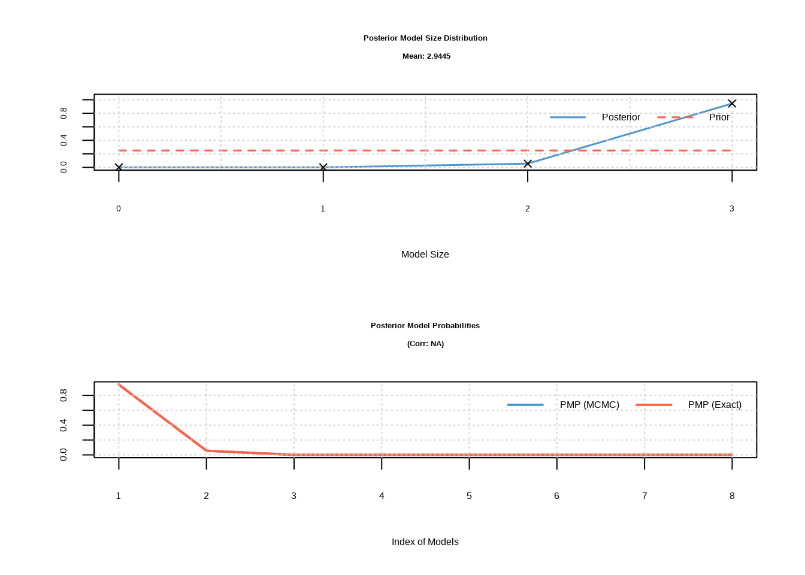

9 模型选择与评估
9.1 引言
林小雨站在她的研究室里，面对着电脑屏幕上一排排回归模型的结果，陷入了沉思。在过去几个月的研究中，她已经成功建立了多个统计模型：简单线性回归模型揭示了温度与树木生长速率的关系，多元回归模型量化了温度、降水和土壤氮含量对植物生物量的综合影响，多项式回归模型则描绘出物种丰富度随海拔变化的优美曲线。每个模型都讲述着森林生态系统的不同故事，每个模型的统计指标都看起来相当不错。
但现在，她面临着一个新的挑战：在这些候选模型中，哪一个才是最可靠的？哪一个模型的预测结果可以用来指导保护区的实际管理？她的导师提醒她，建立模型只是研究的开始，更重要的是选择和评估模型，确保研究结论的可靠性。林小雨意识到，她需要掌握一套系统的方法来回答这些问题——这正是模型选择与评估的核心所在。
在前面的章节中，我们跟随林小雨学习了多种回归模型——从简单的线性回归到复杂的多元和多项式回归。现在，我们将继续她的研究历程，学习如何在众多候选模型中做出科学的选择，如何评估模型的可靠性，如何确保研究结论能够应用于实际的生态保护工作。
模型选择与评估是生态统计建模中至关重要的环节，它不仅仅是技术性的统计操作，更是连接数据、模型与生态学解释的关键桥梁。在生态学研究中，我们追求的不是数学上最完美的模型，而是最能反映生态过程本质、最具预测能力和解释力的模型。林小雨的困惑代表了所有生态学研究者共同面临的挑战：面对丰富的建模工具和复杂的生态数据，如何做出明智的选择？
生态系统的复杂性决定了单一模型很难捕捉所有生态关系。当林小雨面对她的森林调查数据时，她可以构建线性回归模型、多项式回归模型、广义线性模型等多种统计模型。每种模型都基于不同的假设，捕捉数据中不同层面的信息。模型选择的过程就是系统性地比较这些候选模型，找出最适合当前研究问题的那个模型。
林小雨在研究初期就体会到了模型选择的必要性。她收集了8个环境因子的数据，包括温度、降水、海拔、土壤pH、植被覆盖度等。如果将所有变量都纳入模型，虽然能够获得很高的\(R^2\)值，但模型会变得极其复杂，难以解释每个环境因子的独立作用。更严重的是，这种”厨房水槽模型”(把所有变量都塞进去的模型)往往过度适应了训练数据的随机噪声，在预测新样地时表现糟糕。模型选择帮助她确定哪些环境因子真正重要，哪些可以忽略。
其次，生态关系的复杂性要求我们在不同函数形式之间做出选择。林小雨在分析物种丰富度与海拔的关系时，发现线性模型明显不足——物种丰富度在中等海拔最高，而在高海拔和低海拔都较低。她需要决定使用二次多项式、三次多项式，还是更复杂的函数形式。模型选择方法如\(\text{AIC}\)帮助她找到了最优的函数复杂度，既充分描述了生态模式，又避免了过度拟合。
更重要的是，模型选择体现了生态学研究的简约性原则。林小雨的导师经常提醒她：“在科学研究中，简单就是美。”奥卡姆剃刀原理告诉我们：在同等解释力的模型中，应该选择最简单的那个。在生态学中，简约模型不仅计算效率更高，更重要的是它们通常具有更好的生态学解释性。一个包含过多参数的复杂模型可能能够完美拟合林小雨的150个样地数据，但其生态学意义往往难以理解，也难以推广到其他森林生态系统。
模型评估是模型选择的必要补充，它回答了一个更根本的问题：我们选择的模型是否真的可靠？林小雨意识到，即使她选择了统计指标最优的模型，也必须通过系统的评估来验证模型的可靠性。模型的可靠性体现在两个方面：统计可靠性和生态学可靠性。
统计可靠性关注模型是否满足基本的统计假设，参数估计是否准确，预测是否稳定。林小雨通过残差分析发现，她的某个模型存在明显的异方差性——在高海拔地区的预测误差明显大于低海拔地区。这提醒她需要重新审视模型假设或考虑数据变换。她还发现某些样地是强影响点，对模型参数估计有不成比例的影响。进一步调查后，她发现这些样地位于火烧迹地或人工林，代表了特殊的生态情境。这些诊断不仅帮助她识别技术问题，更重要的是揭示了森林生态系统的异质性。
生态学可靠性则关注模型结果是否具有生态学意义，是否能够为生态学理论提供支持，是否能够指导生态保护实践。林小雨在模型评估过程中始终牢记：一个统计上完美的模型如果缺乏生态学解释性，其价值就会大打折扣。例如，她构建的一个模型虽然预测精度很高，但包含了负的温度系数——这在生态学上不合理，因为温度升高通常会促进植物生长。这促使她重新检查数据和模型设定，最终发现是变量间的多重共线性导致了参数估计的不稳定。
在林小雨的研究中，模型选择与评估不仅仅是统计技术，它们反映了她对森林生态系统的理解深度。当她系统地比较不同模型时，实际上是在检验不同的生态学假说。每个候选模型都代表了对森林生态过程的一种可能解释，模型选择过程就是通过数据来评估这些解释的相对合理性。
以林小雨研究森林鸟类丰富度为例，她构建了基于不同环境因子的多个模型：一个模型强调栖息地面积的主导作用(基于岛屿生物地理学理论)，另一个模型突出植被结构的重要性(基于生境异质性假说)，第三个模型关注水源可及性的影响(基于资源可获得性理论)。通过\(\text{AIC}\)比较，她不仅确定了哪个模型拟合最好，更重要的是能够量化不同生态因子对鸟类分布的相对贡献。这种量化分析为保护区管理提供了科学依据——如果栖息地面积被证明是最重要的预测变量，那么扩大保护区面积就应该成为保护规划的优先策略。
模型评估还帮助林小雨理解模型的局限性。她的导师提醒她：“在生态学中，没有完美的模型，只有在一定条件下适用的模型。”通过交叉验证，林小雨评估了模型在不同样地子集上的表现，发现模型在低海拔阔叶林中预测较准，但在高海拔针叶林中误差较大。这提示她模型的适用范围可能受到森林类型的限制。进一步的外部验证显示，当她将模型应用到邻近山区的另一个保护区时，预测精度有所下降。这种对模型局限性的清醒认识是科学严谨性的体现，也提醒林小雨在向保护区管理者汇报结果时需要明确说明模型的适用范围和不确定性。
在实际研究中，林小雨学会了结合统计准则和生态学知识来做出决策。统计准则如\(\text{AIC}\)、\(\text{BIC}\)提供了客观的模型比较标准，但她的导师强调它们不应该成为唯一的决策依据。例如，在某个模型中，土壤pH值的系数虽然统计上不显著(p=0.08)，但林小雨知道土壤酸碱度是影响植物生长的重要因子。在与导师讨论后，她决定保留这个变量，因为它具有明确的生态学意义，且p值接近显著性阈值。
林小雨的模型选择过程是迭代的、探索性的。她从最简单的单变量模型开始，逐步增加变量，同时密切关注\(\text{AIC}\)值和调整\(R^2\)的变化。当添加第四个变量后，\(\text{AIC}\)值不再明显下降，她意识到已经找到了复杂度与性能的最优平衡点。这种渐进式的建模策略不仅计算效率高，更重要的是帮助她理解每个环境因子对模型贡献的边际效应——哪些因子是必需的，哪些因子只是锦上添花。
最后，林小雨明确了模型选择应该服务于她的研究目标：为保护区管理提供科学依据。她的研究目标既包括机制探索(理解哪些环境因子驱动了物种分布)，也包括预测应用(预测不同管理措施对生物多样性的影响)。因此，她需要在模型的解释性和预测精度之间寻求平衡。一个高度复杂的机器学习模型可能预测精度更高，但难以向保护区管理者解释；而一个简单的线性模型虽然易于解释，但可能无法捕捉重要的非线性关系。通过系统的模型选择与评估，林小雨最终找到了适合她研究目标的最佳模型。
通过系统的模型选择与评估，林小雨构建了既统计可靠又生态学有意义的模型，为理解森林生态过程、预测气候变化影响、指导保护区管理提供了坚实的科学基础。这个过程不仅提升了她研究的科学质量，更重要的是培养了她对生态统计建模的深刻理解——认识到模型是工具而不是真理，是帮助我们理解复杂生态系统的有力手段。
现在，让我们跟随林小雨的脚步，系统学习模型选择与评估的方法和原理。
9.2 模型选择
9.2.1 模型选择原则
林小雨开始整理她的森林土壤调查数据，准备研究土壤养分如何影响植物生物量。她面临着一个关键问题：应该选择什么样的模型来描述这种生态关系？是简单的线性模型，还是更复杂的多项式模型？这个问题的答案引出了模型选择的核心原则——在模型复杂度和拟合优度之间寻找最优平衡点。
平衡模型复杂度和拟合优度是林小雨面临的第一个挑战。模型复杂度通常用参数数量来衡量，而拟合优度则通过模型对数据的解释能力来评估。在生态学中，我们面临着两难选择：过于简单的模型可能无法充分捕捉生态关系的复杂性，导致欠拟合；而过于复杂的模型则可能过度适应训练数据的随机噪声，导致过拟合。
林小雨在分析土壤养分与植物生物量的关系时，首先尝试了最简单的线性模型。但她很快发现，线性模型无法充分描述物种对养分的最适响应——在养分浓度过高或过低时，植物生长都会受到抑制。这种欠拟合不仅降低了模型的预测精度，更重要的是可能掩盖了关键的生态机制，如养分毒性和养分限制的阈值效应。
过拟合则是林小雨在后续建模中遇到的更常见问题。当她尝试使用10次多项式来描述养分与生物量的关系时，模型完美地拟合了训练数据中的随机变异，包括测量误差和偶然的生态现象。但这种过度拟合的模型在预测新样地时表现糟糕。在生态学中，过拟合的典型表现是模型包含了大量统计显著但生态学意义不明确的变量，或者使用了过于复杂的函数形式来描述本质上简单的生态关系。
奥卡姆剃刀原理在林小雨的模型选择中具有重要的指导意义。她的导师经常引用这个源自14世纪哲学家的原则：“如无必要，勿增实体”。在模型选择的语境下，这意味着在同等解释力的模型中，应该选择最简单的那个。简约模型不仅计算效率更高，更重要的是它们通常具有更好的泛化能力和生态学解释性。
生态学中的简约性原则体现在林小雨研究的多个层面。在变量选择层面，她应该只包含那些对植物生物量有实质性影响的土壤因子；在函数形式层面，她应该选择最能反映生态机制的函数关系；在模型结构层面，她应该避免不必要的复杂交互项和随机效应。
生态学意义是林小雨模型选择的最终评判标准。一个统计上完美的模型如果缺乏生态学解释性，其价值就会大打折扣。在生态学研究中，模型选择不仅要考虑统计指标，更要考虑模型的生态学合理性。例如，一个预测植物生物量的模型如果包含了生态学上不合理的环境因子组合，即使其预测精度很高，也难以被生态学家接受。
林小雨的模型选择过程本身就是对森林生态机制的深入探索。通过系统比较不同复杂度的模型，她能够识别哪些生态过程是必要的，哪些是冗余的。这种识别过程帮助她更深入地理解土壤养分如何影响森林生态系统的生产力。
林小雨开始实施她的模型复杂度平衡研究。她首先需要生成模拟数据来演示不同复杂度模型的拟合效果。这些数据模拟了她在森林调查中观察到的植物生物量与土壤养分的关系，其中真实生态关系是二次的，反映了物种对养分的最适响应模式。
# 林小雨的森林土壤调查数据：演示模型复杂度与拟合优度的平衡
# 设置随机种子确保结果可重现，便于林小雨重复分析
set.seed(123)
# 生成林小雨的森林土壤调查数据：植物生物量与土壤养分的关系
# 样本量设置为100个森林样地观测
n_forest_plots <- 100
# 创建土壤养分梯度，从10到100 mg/kg均匀分布
# 模拟真实森林土壤变异
forest_soil_nutrient <- seq(10, 100, length.out = n_forest_plots)
# 真实生态关系：二次关系（存在最适养分范围）
# 基础生物量为50 g/m²，线性项系数为0.8，二次项系数为-0.005
forest_biomass_true <- 50 + 0.8 * forest_soil_nutrient -
0.005 * forest_soil_nutrient^2
# 添加随机噪声模拟观测误差，标准差为10 g/m²
# 反映野外调查的不确定性
forest_biomass_observed <- forest_biomass_true +
rnorm(n_forest_plots, 0, 10)
# 创建数据框用于存储林小雨的森林生态数据
# 包含土壤养分浓度和观测植物生物量两个关键变量
forest_soil_data <- data.frame(
soil_nutrient = forest_soil_nutrient,
plant_biomass = forest_biomass_observed
)数据准备完成后，林小雨开始拟合不同复杂度的模型。她构建了四个模型：线性模型、二次模型、三次模型和10次多项式模型，每个模型代表了对植物生物量与土壤养分关系的不同假设。
# 拟合不同复杂度的模型
# 线性模型：最简单的模型，假设线性关系
model_linear <- lm(plant_biomass ~ soil_nutrient, data = forest_soil_data)
# 二次模型：包含线性项和二次项，适合描述最适响应
model_quadratic <- lm(plant_biomass ~ poly(soil_nutrient, 2),
data = forest_soil_data)
# 三次模型：包含三次项，可能过度参数化
model_cubic <- lm(plant_biomass ~ poly(soil_nutrient, 3),
data = forest_soil_data)
# 10次多项式：严重过度拟合，完美拟合训练数据噪声
model_overfit <- lm(plant_biomass ~ poly(soil_nutrient, 10),
data = forest_soil_data)模型拟合完成后，林小雨需要量化评估每个模型的性能。她计算了两个关键指标：R²衡量模型的拟合优度，AIC平衡拟合优度和模型复杂度。
# 计算拟合优度（$R^2$）
# R²衡量模型解释的方差比例
r2_linear <- summary(model_linear)$r.squared
r2_quadratic <- summary(model_quadratic)$r.squared
r2_cubic <- summary(model_cubic)$r.squared
r2_overfit <- summary(model_overfit)$r.squared
# 计算$\text{AIC}$值
# AIC平衡模型拟合优度和复杂度，值越小越好
aic_linear <- AIC(model_linear)
aic_quadratic <- AIC(model_quadratic)
aic_cubic <- AIC(model_cubic)
aic_overfit <- AIC(model_overfit)# 绘制比较图
# 设置图形布局为2行2列，便于比较四个模型
par(mfrow = c(2, 2))
# 线性模型图
# 绘制散点图显示观测数据
plot(plant_biomass ~ soil_nutrient,
data = forest_soil_data,
# 标题包含R²和AIC值用于模型比较
main = paste("线性模型\n$R^2$ =", round(r2_linear, 3),
"$\\text{AIC}$ =", round(aic_linear, 1)),
xlab = "土壤养分", ylab = "植物生物量",
pch = 16, col = "blue" # 蓝色实心点
)
# 添加模型拟合线
lines(forest_soil_nutrient, predict(model_linear), col = "red", lwd = 2)
# 二次模型图
plot(plant_biomass ~ soil_nutrient,
data = forest_soil_data,
main = paste("二次模型\n$R^2$ =", round(r2_quadratic, 3),
"$\\text{AIC}$ =", round(aic_quadratic, 1)),
xlab = "土壤养分", ylab = "植物生物量",
pch = 16, col = "blue"
)
lines(forest_soil_nutrient, predict(model_quadratic), col = "red", lwd = 2)
# 三次模型图
plot(plant_biomass ~ soil_nutrient,
data = forest_soil_data,
main = paste("三次模型\n$R^2$ =", round(r2_cubic, 3),
"$\\text{AIC}$ =", round(aic_cubic, 1)),
xlab = "土壤养分", ylab = "植物生物量",
pch = 16, col = "blue"
)
lines(forest_soil_nutrient, predict(model_cubic), col = "red", lwd = 2)
# 过度拟合模型图
plot(plant_biomass ~ soil_nutrient,
data = forest_soil_data,
main = paste("10次多项式\n$R^2$ =", round(r2_overfit, 3),
"$\\text{AIC}$ =", round(aic_overfit, 1)),
xlab = "土壤养分", ylab = "植物生物量",
pch = 16, col = "blue"
)
lines(forest_soil_nutrient, predict(model_overfit), col = "red", lwd = 2)
图9.1: 模型复杂度与拟合优度平衡：线性、二次、三次和10次多项式模型对植物生物量与土壤养分关系的拟合效果比较
## === 模型复杂度与拟合优度平衡演示 ===
##
## 线性模型 (欠拟合):
## - $R^2$ = 0.383 $\text{AIC}$ = 734.8
## - 问题：无法捕捉最适养分范围
##
## 二次模型 (最优):
## - $R^2$ = 0.416 $\text{AIC}$ = 731.3
## - 优势：正确反映了真实生态关系
##
## 三次模型 (过度参数化):
## - $R^2$ = 0.416 $\text{AIC}$ = 733.3
## - 问题：不必要的复杂度
##
## 10次多项式 (严重过拟合):
## - $R^2$ = 0.455 $\text{AIC}$ = 740.4
## - 问题：过度适应随机噪声，预测能力差
##
## 模型比较结果已生成，请查看图表和性能指标。通过模型复杂度与拟合优度平衡的演示，我们可以得出重要的生态学启示。在这个植物生物量与土壤养分的例子中，真实生态关系是二次的，反映了物种对养分的最适响应模式。线性模型虽然简单，但过于简化，无法捕捉这种生态学模式；而二次模型既充分捕捉了生态关系，又保持了简约性。高次多项式虽然\(R^2\)更高，但生态学意义不明确，\(\text{AIC}\)值也确认了二次模型的最优性。
9.2.2 信息准则
林小雨在分析森林鸟类丰富度与环境因子的关系时，面临着多个看似合理的模型选择。栖息地面积、植被密度、距水源距离和土壤pH值都可能影响鸟类分布，但她不确定哪些因子真正重要，哪些可以忽略。信息准则为她提供了客观的模型比较标准，帮助她在多个候选模型中做出科学的选择。
信息准则是模型选择中最重要的统计工具，它们通过数学方法量化了模型复杂度和拟合优度之间的权衡。在生态学研究中，信息准则为我们提供了客观的模型比较标准，帮助我们避免主观偏见对模型选择的影响。
AIC（赤池信息准则）是由日本统计学家赤池弘次在1974年提出的，其核心思想是基于信息论来衡量模型的相对质量。AIC的计算公式为：\[\text{AIC} = -2 \ln(L) + 2k\]，其中\(L\)是模型的最大似然值，\(k\)是模型参数的数量。这个公式体现了信息准则的基本哲学：第一项惩罚模型对数据的拟合不足，第二项惩罚模型的复杂度。
\(\text{AIC}\)的生态学意义在于它量化了模型的信息损失。当我们用模型来描述生态数据时，总会丢失一些信息。\(\text{AIC}\)估计了这种信息损失的大小，\(\text{AIC}\)值越小的模型，信息损失越小，模型质量越高。在生态学应用中，\(\text{AIC}\)特别适合用于比较非嵌套模型，即那些具有不同变量组合或不同函数形式的模型。
\(\text{AIC}\)的一个关键特性是它的相对性。\(\text{AIC}\)值本身没有绝对意义，只有不同模型之间的\(\text{AIC}\)差异\(\Delta\text{AIC}\)才有意义。通常认为，\(\Delta\text{AIC} < 2\)的模型在统计上难以区分，\(2 \leq \Delta\text{AIC} \leq 7\)的模型有实质性差异，\(\Delta\text{AIC} > 10\)的模型则明显优劣分明。这种相对比较的特性使得\(\text{AIC}\)特别适合生态学研究，因为生态学中很少存在”完美”的模型。
BIC（贝叶斯信息准则）是AIC的改进版本，由Gideon Schwarz在1978年提出。BIC的计算公式为：\[\text{BIC} = -2 \ln(L) + k \ln(n)\]，其中\(n\)是样本量。与AIC相比，BIC对模型复杂度的惩罚更强，特别是当样本量较大时。
\(\text{BIC}\)的数学基础是贝叶斯因子，它估计了模型的后验概率。在生态学研究中，\(\text{BIC}\)特别适合用于比较具有明确理论基础的模型，因为它倾向于选择那些在贝叶斯框架下更有可能的模型。\(\text{BIC}\)的另一个优势是它的一致性特性：当样本量趋于无穷大时，\(\text{BIC}\)会选择真实的模型（如果真实模型在候选模型中）。
在生态学实践中，\(\text{AIC}\)和\(\text{BIC}\)的选择取决于研究目标。如果研究目标是预测，\(\text{AIC}\)通常更合适，因为它倾向于选择预测能力更强的模型。如果研究目标是机制探索和模型识别，\(\text{BIC}\)可能更合适，因为它倾向于选择更简约的模型。对于小样本情况，推荐使用\(\text{AIC}\)的修正版本\(\text{AIC}_c\)。
信息准则在生态学中的应用需要谨慎。首先，信息准则只能比较基于相同数据的模型。其次，信息准则假设候选模型已经包含了真实模型，这在生态学中往往不成立。第三，信息准则对样本量敏感，小样本情况下可能需要使用修正版本如\(\text{AIC}_c\)。
为了演示信息准则在生态学中的应用，林小雨创建了一个森林鸟类丰富度研究的案例。她模拟了100个森林样地的调查数据，包括栖息地面积、植被密度、距水源距离和土壤pH值等环境因子，其中只有部分因子真正影响鸟类丰富度。
# 信息准则在生态学中的应用演示：林小雨的森林鸟类丰富度研究
set.seed(456)
# 生成林小雨的森林鸟类调查数据：鸟类丰富度与多个环境因子的关系
n_forest_birds <- 100
# 真实环境因子（林小雨在森林调查中测量的变量）
forest_habitat_area <- runif(n_forest_birds, 1, 100) # 栖息地面积(公顷)
forest_vegetation_density <- runif(n_forest_birds, 0.1, 0.9) # 植被密度
forest_distance_to_water <- runif(n_forest_birds, 0.1, 5) # 距水源距离(km)
forest_soil_ph <- runif(n_forest_birds, 4.5, 8.5) # 土壤pH值
# 生成鸟类丰富度（只有部分变量有真实影响）
# 真实关系：丰富度 ~ 面积 + 植被密度 + 距水源距离
forest_bird_richness <- rpois(
n_forest_birds,
exp(1.5 + 0.02 * forest_habitat_area +
1.2 * forest_vegetation_density - 0.3 * forest_distance_to_water +
rnorm(n_forest_birds, 0, 0.3))
)
# 创建数据框
forest_bird_data <- data.frame(
richness = forest_bird_richness,
area = forest_habitat_area,
vegetation = forest_vegetation_density,
water_distance = forest_distance_to_water,
soil_ph = forest_soil_ph
)基于不同的生态学假说，林小雨构建了六个候选模型。这些模型涵盖了从简单到复杂的各种假设，包括单一因子模型、双因子组合模型、全模型以及过度拟合模型。
# 构建多个候选模型：林小雨基于不同生态学假说构建的鸟类丰富度模型
forest_bird_models <- list()
# 简单模型（基于单一因子假说）
forest_bird_models[["area_only"]] <- lm(richness ~ area, data = forest_bird_data)
forest_bird_models[["vegetation_only"]] <- lm(richness ~ vegetation, data = forest_bird_data)
# 中等复杂度模型（基于生态学理论组合）
forest_bird_models[["area_vegetation"]] <- lm(richness ~ area + vegetation,
data = forest_bird_data)
forest_bird_models[["area_water"]] <- lm(richness ~ area + water_distance,
data = forest_bird_data)
# 复杂模型（包含所有可能因子）
forest_bird_models[["full_model"]] <- lm(richness ~ area + vegetation +
water_distance + soil_ph, data = forest_bird_data)
forest_bird_models[["overfit_model"]] <- lm(richness ~ area + vegetation +
water_distance + soil_ph + I(area^2) + I(vegetation^2),
data = forest_bird_data)接下来，林小雨计算了每个模型的信息准则指标。她计算了AIC、BIC、ΔAIC、ΔBIC以及AIC权重，这些指标将帮助她客观地比较不同模型的相对优劣。
# 计算信息准则：林小雨比较不同鸟类丰富度模型
forest_bird_model_comparison <- data.frame(
Model = names(forest_bird_models),
R2 = sapply(forest_bird_models, function(m) summary(m)$r.squared),
AIC = sapply(forest_bird_models, AIC),
BIC = sapply(forest_bird_models, BIC),
Parameters = sapply(forest_bird_models, function(m) length(coef(m)))
)
# 计算$\\text{AIC}$和$\\text{BIC}$差异
forest_bird_model_comparison$delta_AIC <- forest_bird_model_comparison$AIC - min(forest_bird_model_comparison$AIC)
forest_bird_model_comparison$delta_BIC <- forest_bird_model_comparison$BIC - min(forest_bird_model_comparison$BIC)
# 计算$\\text{AIC}$权重
forest_bird_model_comparison$AIC_weight <- exp(-0.5 * forest_bird_model_comparison$delta_AIC) /
sum(exp(-0.5 * forest_bird_model_comparison$delta_AIC))
# 排序
forest_bird_model_comparison <- forest_bird_model_comparison[order(forest_bird_model_comparison$AIC), ]
# 确定最优模型
best_aic <- forest_bird_model_comparison$Model[1]
best_bic <- forest_bird_model_comparison$Model[which.min(forest_bird_model_comparison$BIC)]## === 林小雨的森林鸟类丰富度模型比较结果 ===## 信息准则帮助林小雨在多个候选模型中做出科学选择| Model | R2 | AIC | BIC | Parameters | delta_AIC | delta_BIC | AIC_weight | |
|---|---|---|---|---|---|---|---|---|
| full_model | full_model | 0.6061475 | 737.9981 | 753.6291 | 5 | 0.000000 | 0.000000 | 0.7596039 |
| overfit_model | overfit_model | 0.6127788 | 740.3000 | 761.1414 | 7 | 2.301941 | 7.512282 | 0.2402851 |
| area_water | area_water | 0.5108839 | 755.6604 | 766.0811 | 3 | 17.662332 | 12.451992 | 0.0001110 |
| area_vegetation | area_vegetation | 0.4191497 | 772.8497 | 783.2704 | 3 | 34.851645 | 29.641305 | 0.0000000 |
| area_only | area_only | 0.3416164 | 783.3792 | 791.1947 | 2 | 45.381119 | 37.565609 | 0.0000000 |
| vegetation_only | vegetation_only | 0.1191910 | 812.4845 | 820.3000 | 2 | 74.486428 | 66.670918 | 0.0000000 |
# 可视化信息准则比较：林小雨的森林鸟类丰富度模型
par(mfrow = c(1, 2))
# AIC比较
barplot(forest_bird_model_comparison$delta_AIC,
names.arg = forest_bird_model_comparison$Model,
main = expression(paste("林小雨的鸟类模型", Delta, "AIC差异比较")),
xlab = "模型", ylab = expression(paste(Delta, "AIC")),
col = ifelse(forest_bird_model_comparison$delta_AIC < 2, "green",
ifelse(forest_bird_model_comparison$delta_AIC < 7, "yellow", "red")
),
las = 2, cex.names = 0.7
)
abline(h = 2, lty = 2, col = "blue")
abline(h = 7, lty = 2, col = "red")
# BIC比较
barplot(forest_bird_model_comparison$delta_BIC,
names.arg = forest_bird_model_comparison$Model,
main = expression(paste("林小雨的鸟类模型", Delta, "BIC差异比较")),
xlab = "模型", ylab = expression(paste(Delta, "BIC")),
col = ifelse(forest_bird_model_comparison$delta_BIC < 2, "green",
ifelse(forest_bird_model_comparison$delta_BIC < 7, "yellow", "red")
),
las = 2, cex.names = 0.7
)
abline(h = 2, lty = 2, col = "blue")
abline(h = 7, lty = 2, col = "red")图8.1: 信息准则可视化：ΔAIC和ΔBIC差异比较
根据信息准则的分析结果，林小雨得出了重要的模型选择启示。根据\(\text{AIC}\)准则，最优模型是full_model，其\(\text{AIC}\)权重为0.76，表明这个模型在候选模型中最有可能。根据\(\text{BIC}\)准则，最优模型是full_model，\(\text{BIC}\)倾向于选择更简约的模型。模型选择启示表明，full_model模型在\(\text{AIC}\)和\(\text{BIC}\)下都表现良好，这个模型包含了真实关系中的关键变量，而过度拟合模型虽然R²更高，但信息准则惩罚了其复杂度。
在林小雨的森林鸟类丰富度研究中，栖息地面积和植被密度是影响鸟类丰富度的关键因子，信息准则帮助她识别了这些关键因子，避免了过度拟合。最优模型既统计可靠又具有明确的生态学意义，为她的森林保护研究提供了科学依据。
9.2.3 似然比检验
林小雨在分析植物生长与温度、光照的关系时，遇到了一个重要的统计问题：是否需要考虑温度与光照的交互作用？这个问题引出了似然比检验的应用。似然比检验是模型选择中用于比较嵌套模型的经典统计方法。在生态学研究中，嵌套模型是指一个模型是另一个模型的特殊情形，通常通过约束某些参数为零或相等来实现。似然比检验通过比较两个嵌套模型的拟合差异，来判断增加模型复杂度是否带来了统计上显著的改善。
基本原理：似然比检验基于两个嵌套模型的最大似然值比较。设\(L_0\)为简单模型（零模型）的最大似然值，\(L_1\)为复杂模型（备择模型）的最大似然值。似然比统计量\[\text{LR} = -2 \ln\left(\frac{L_0}{L_1}\right) = 2(\ln L_1 - \ln L_0)\]。在零假设（简单模型足够好）下，LR统计量近似服从卡方分布，自由度为两个模型参数数量的差异。
似然比检验的生态学意义在于它提供了统计显著性检验，帮助我们判断增加模型复杂度是否值得。例如，在研究物种分布与环境因子的关系时，我们可能想知道是否需要考虑环境因子之间的交互作用。通过比较包含交互项的模型和不包含交互项的模型，似然比检验可以告诉我们交互作用是否统计显著。
应用场景：似然比检验在生态学中有广泛的应用。在广义线性模型中，它可以用于比较不同的连接函数；在混合效应模型中，它可以用于检验随机效应的显著性；在物种分布模型中，它可以用于比较不同的环境变量组合。
局限性：似然比检验只能用于比较嵌套模型，对于非嵌套模型的比较无能为力。此外，似然比检验对样本量敏感，大样本情况下即使很小的改善也可能统计显著，但这不一定具有生态学意义。
# 似然比检验数据生成：林小雨的苗圃实验 - 植物生长与温度、光照的关系
set.seed(789)
# 生成林小雨的苗圃实验数据：植物生长与温度、光照的关系
n_nursery_plants <- 80
# 林小雨在苗圃中控制的环境因子
nursery_temperature <- runif(n_nursery_plants, 15, 30) # 温度(°C)
nursery_light_intensity <- runif(n_nursery_plants, 100, 1000) # 光照强度(lux)
# 生成植物生长数据（存在温度-光照交互作用）
nursery_growth_rate <- 2 + 0.1 * nursery_temperature + 0.002 * nursery_light_intensity +
0.0001 * nursery_temperature * nursery_light_intensity + rnorm(n_nursery_plants, 0, 0.5)
# 创建数据框
nursery_plant_data <- data.frame(
growth = nursery_growth_rate,
temp = nursery_temperature,
light = nursery_light_intensity
)# 构建嵌套模型进行比较：林小雨的苗圃实验模型
# 简单模型：只有主效应
nursery_model_simple <- lm(growth ~ temp + light, data = nursery_plant_data)
# 复杂模型：包含交互项
nursery_model_complex <- lm(growth ~ temp * light, data = nursery_plant_data)
# 执行似然比检验
library(lmtest)
nursery_lrt_result <- lrtest(nursery_model_simple, nursery_model_complex)
# 提取似然比检验的p值
nursery_lrt_p_value <- nursery_lrt_result$`Pr(>Chisq)`[2]| #Df | LogLik | Df | Chisq | Pr(>Chisq) |
|---|---|---|---|---|
| 4 | -58.86869 | NA | NA | NA |
| 5 | -56.40071 | 1 | 4.935962 | 0.0263034 |
| Estimate | Std. Error | t value | Pr(>|t|) | |
|---|---|---|---|---|
| (Intercept) | 0.9522163 | 0.3475783 | 2.739574 | 0.0076414 |
| temp | 0.1589956 | 0.0149805 | 10.613532 | 0.0000000 |
| light | 0.0037280 | 0.0002189 | 17.031520 | 0.0000000 |
##
## 复杂模型 (包含交互项):| Estimate | Std. Error | t value | Pr(>|t|) | |
|---|---|---|---|---|
| (Intercept) | 2.6217208 | 0.8314621 | 3.1531452 | 0.0023129 |
| temp | 0.0819161 | 0.0379749 | 2.1571128 | 0.0341579 |
| light | 0.0009324 | 0.0012889 | 0.7234173 | 0.4716442 |
| temp:light | 0.0001286 | 0.0000585 | 2.1992829 | 0.0308988 |
# 计算模型改善程度
nursery_r2_simple <- summary(nursery_model_simple)$r.squared
nursery_r2_complex <- summary(nursery_model_complex)$r.squared
nursery_r2_improvement <- nursery_r2_complex - nursery_r2_simple##
## === 模型改善分析 ===
## R²改善: 0.0093
## 参数增加: 1个 (交互项)
## 似然比检验p值: 0.0263## 似然比检验结果已计算，请查看后续生态学解释。##
## === 交互作用可视化 ===# 创建预测网格
nursery_pred_grid <- expand.grid(
temp = seq(15, 30, length.out = 20),
light = c(300, 600, 900) # 低、中、高光照
)
# 使用复杂模型进行预测
nursery_pred_grid$pred_growth <- predict(nursery_model_complex, newdata = nursery_pred_grid)
# 绘制交互作用图
library(ggplot2)
ggplot(nursery_pred_grid, aes(x = temp, y = pred_growth, color = factor(light))) +
geom_line(size = 1) +
labs(
title = "林小雨的苗圃实验：温度与光照对植物生长的交互作用",
x = "温度 (°C)",
y = "预测生长速率",
color = "光照强度 (lux)"
) +
theme_minimal() +
scale_color_manual(values = c("300" = "blue", "600" = "green", "900" = "red"))图8.2: 林小雨的苗圃实验：温度与光照对植物生长的交互作用。在不同光照强度下温度对植物生长速率的影响，展示了环境因子交互作用在植物生长中的重要性
根据似然比检验的结果（p值 = 0.0263），我们可以得出重要的生态学解释。似然比检验显著 (p < 0.05)，表明温度与光照的交互作用对植物生长有显著影响，复杂模型显著改善了模型拟合，应该选择包含交互项的模型。
## === 林小雨的苗圃实验生态学解释 ===## 林小雨的苗圃实验结果表明，温度与光照的交互作用对植物生长有显著影响。
## 生态学意义：
## - 在低光照条件下，温度升高对植物生长的促进作用有限
## - 在高光照条件下，温度升高显著促进植物生长
## - 这种交互作用反映了植物对光热资源的协同利用机制
##
## 林小雨的启示：在苗圃管理中，需要同时考虑温度和光照的协同效应，
## 而不是单独优化单个环境因子。9.2.4 模型平均
林小雨在研究溪流鱼类丰度与环境因子的关系时，面临着多个看似合理的模型选择。水温、溶解氧、pH值和浊度都可能影响鱼类分布，但她不确定哪些因子真正重要。模型平均为她提供了一种系统的方法来处理这种不确定性，通过组合多个候选模型的预测来获得更稳健的结论。
模型平均是现代生态统计建模中的重要方法，它通过组合多个候选模型的预测来减少模型选择的不确定性。在生态学研究中，我们经常面临多个看似合理的模型，每个模型都基于不同的生态学假设。模型平均承认这种不确定性，并通过加权平均的方式利用所有候选模型的信息。
基本原理：模型平均的核心思想是，没有一个模型是绝对正确的，但每个模型都可能包含部分真理。通过给不同的模型分配权重，然后组合它们的预测，我们可以获得更稳健、更准确的估计。模型权重通常基于信息准则（如\(\text{AIC}\)权重）计算，权重反映了每个模型相对其他模型的证据强度。
\(\text{AIC}\)权重是最常用的模型权重计算方法。对于每个模型\(i\)，其\(\text{AIC}\)权重\[w_i = \frac{\exp(-0.5 \Delta\text{AIC}_i)}{\sum_j \exp(-0.5 \Delta\text{AIC}_j)}\]，其中\(\Delta\text{AIC}_i\)是模型\(i\)与最优模型的\(\text{AIC}\)差异。\(\text{AIC}\)权重可以解释为模型\(i\)是真实模型的相对概率。
模型平均的类型：模型平均主要分为两种类型。参数平均是对不同模型的参数估计进行加权平均，适用于模型具有相同参数结构的情况。预测平均是对不同模型的预测值进行加权平均，适用于模型结构不同的情况。在生态学中，预测平均更为常用，因为它可以处理具有不同变量组合的模型。
生态学意义：模型平均在生态学中具有重要的应用价值。首先，它减少了模型选择的不确定性，避免了”赢者通吃”的问题。其次，它提供了更稳健的参数估计和预测，特别是在小样本情况下。第三，它允许我们量化不同生态学假设的相对支持程度。
局限性：模型平均需要谨慎使用。首先，它假设候选模型已经包含了真实模型，这在生态学中往往不成立。其次，模型平均可能稀释强信号，如果有一个明显优于其他模型的候选模型，模型平均可能不如直接选择这个最优模型。第三，模型平均的计算复杂度较高，特别是当候选模型数量很多时。
模型平均是现代生态统计建模中的重要方法，它通过组合多个候选模型的预测来减少模型选择的不确定性。在生态学研究中，我们经常面临多个看似合理的模型，每个模型都基于不同的生态学假设。模型平均承认这种不确定性，并通过加权平均的方式利用所有候选模型的信息。
# 模型平均在生态学中的应用 - 数据生成
set.seed(101)
# 生成林小雨的溪流鱼类调查数据：鱼类丰度与水体环境因子的关系
n_stream_fish <- 120
# 林小雨在溪流调查中测量的环境因子
stream_water_temp <- runif(n_stream_fish, 10, 25) # 水温(°C)
stream_dissolved_oxygen <- runif(n_stream_fish, 2, 10) # 溶解氧(mg/L)
stream_ph_level <- runif(n_stream_fish, 6.5, 8.5) # pH值
stream_turbidity <- runif(n_stream_fish, 1, 50) # 浊度(NTU)
# 生成鱼类丰度数据
# 真实关系：丰度 ~ 水温 + 溶解氧 + pH
stream_fish_abundance <- rpois(
n_stream_fish,
exp(2.0 + 0.05 * stream_water_temp +
0.15 * stream_dissolved_oxygen + 0.8 * stream_ph_level +
rnorm(n_stream_fish, 0, 0.2))
)
# 创建数据框
stream_fish_data <- data.frame(
abundance = stream_fish_abundance,
temp = stream_water_temp,
oxygen = stream_dissolved_oxygen,
ph = stream_ph_level,
turbidity = stream_turbidity
)构建基于不同生态学假设的候选模型是模型平均的第一步。每个模型代表了对生态过程的一种可能解释，模型平均通过AIC权重量化这些解释的相对合理性。
# 构建多个候选模型（基于林小雨的不同生态学假设）
stream_fish_models <- list()
# 模型1：温度主导假说
stream_fish_models[["temp_model"]] <- lm(log(abundance + 1) ~ temp, data = stream_fish_data)
# 模型2：水质综合假说
stream_fish_models[["water_quality"]] <- lm(log(abundance + 1) ~ temp + oxygen + ph, data = stream_fish_data)
# 模型3：物理环境假说
stream_fish_models[["physical_env"]] <- lm(log(abundance + 1) ~ temp + turbidity, data = stream_fish_data)
# 模型4：全模型
stream_fish_models[["full_model"]] <- lm(log(abundance + 1) ~ temp + oxygen + ph + turbidity, data = stream_fish_data)
# 计算$\\text{AIC}$和权重
stream_aic_values <- sapply(stream_fish_models, AIC)
stream_delta_aic <- stream_aic_values - min(stream_aic_values)
stream_aic_weights <- exp(-0.5 * stream_delta_aic) / sum(exp(-0.5 * stream_delta_aic))
# 创建模型比较表
stream_model_comparison <- data.frame(
Model = names(stream_fish_models),
AIC = round(stream_aic_values, 2),
Delta_AIC = round(stream_delta_aic, 2),
AIC_Weight = round(stream_aic_weights, 3),
R2 = round(sapply(stream_fish_models, function(m) summary(m)$r.squared), 3)
)
stream_model_comparison <- stream_model_comparison[order(stream_model_comparison$AIC), ]MuMIn包提供了自动化的模型平均工具。dredge函数生成所有可能的模型组合，model.avg函数执行模型平均，sw函数计算变量重要性。这些工具大大简化了模型平均的实施过程。
# 执行模型平均
library(MuMIn)
# 使用dredge函数自动生成所有可能的模型组合
stream_full_model <- lm(log(abundance + 1) ~ temp + oxygen + ph + turbidity,
data = stream_fish_data, na.action = "na.fail"
)
# 生成所有子模型
stream_all_models <- dredge(stream_full_model)
# 执行模型平均
stream_avg_model <- model.avg(stream_all_models, fit = TRUE)
# 输出模型平均结果
cat("\n=== 林小雨的溪流鱼类模型平均结果 ===\n")##
## === 林小雨的溪流鱼类模型平均结果 ===# 提取平均模型的系数
stream_avg_coef <- summary(stream_avg_model)$coefmat.full
knitr::kable(stream_avg_coef, caption = "林小雨的溪流鱼类模型平均结果：平均模型系数")| Estimate | Std. Error | Adjusted SE | z value | Pr(>|z|) | |
|---|---|---|---|---|---|
| (Intercept) | 1.6226421 | 0.2324172 | 0.2348710 | 6.9086519 | 0.0000000 |
| oxygen | 0.1702822 | 0.0075580 | 0.0076378 | 22.2946060 | 0.0000000 |
| ph | 0.8242705 | 0.0293587 | 0.0296689 | 27.7823265 | 0.0000000 |
| temp | 0.0531857 | 0.0037299 | 0.0037693 | 14.1103420 | 0.0000000 |
| turbidity | -0.0001485 | 0.0007176 | 0.0007243 | 0.2050028 | 0.8375699 |
##
## === 变量重要性 ===## oxygen ph temp turbidity
## Sum of weights: 1.00 1.00 1.00 0.27
## N containing models: 8 8 8 8可视化是理解模型平均结果的重要工具。变量重要性图显示各环境因子的相对重要性，模型权重分布图展示不同候选模型的相对支持度。
# 可视化模型平均结果
par(mfrow = c(1, 2))
# 变量重要性图
barplot(stream_var_importance[order(stream_var_importance, decreasing = TRUE)],
main = "林小雨的溪流鱼类研究\n变量重要性",
xlab = "环境因子", ylab = "重要性",
col = "lightblue", las = 2
)
# 模型权重分布
barplot(stream_model_comparison$AIC_Weight,
names.arg = stream_model_comparison$Model,
main = "林小雨的溪流鱼类研究\n模型权重分布",
xlab = "模型", ylab = "$\\text{AIC}$权重",
col = "lightgreen", las = 2
)图8.4: 林小雨的溪流鱼类模型平均结果：变量重要性和模型权重分布。左图显示水温、溶解氧和pH值是影响鱼类丰度的关键因子，右图展示不同候选模型的相对支持度
模型平均预测通常比单一模型预测更稳健。通过比较单一模型与模型平均的预测结果，我们可以评估模型平均在减少预测不确定性方面的价值。
# 比较单一模型与模型平均的预测
# 生成测试数据
stream_test_data <- data.frame(
temp = 18,
oxygen = 6,
ph = 7.5,
turbidity = 20
)
# 单一模型预测
stream_single_pred <- predict(stream_fish_models[["water_quality"]], newdata = stream_test_data)
# 模型平均预测
stream_avg_pred <- predict(stream_avg_model, newdata = stream_test_data)## 林小雨的溪流测试条件：水温18°C, 溶解氧6mg/L, pH7.5, 浊度20NTU## 单一模型预测: 17668.2 条鱼## 模型平均预测: 17688.7 条鱼Bootstrap方法能够量化预测的不确定性，包括参数估计误差、模型选择不确定性和生态系统的自然变异性。
# 计算预测区间
# 使用bootstrap计算预测区间
library(boot)
# 定义预测函数
stream_predict_function <- function(data, indices) {
boot_data <- data[indices, ]
# 拟合模型并预测
model <- lm(log(abundance + 1) ~ temp + oxygen + ph, data = boot_data)
pred <- predict(model, newdata = stream_test_data)
return(exp(pred) - 1)
}
# 执行bootstrap
set.seed(2024)
stream_boot_results <- boot(stream_fish_data, stream_predict_function, R = 1000)
# 计算置信区间
stream_ci <- boot.ci(stream_boot_results, type = "perc")## 林小雨的溪流鱼类Bootstrap 95% 预测区间: [ 17104.5 , 18267.4 ] 条鱼Bootstrap预测区间反映了模型预测中的多种不确定性来源：参数估计的不确定性、模型选择的不确定性以及生态系统的自然变异性。这种全面的不确定性量化使得模型预测更加可靠，为生态决策提供了更科学的依据。
模型平均在生态学中具有重要的应用价值。它减少了模型选择的不确定性，提供了更稳健的参数估计，量化了不同生态学假说的相对支持程度，并通过变量重要性分析揭示了关键环境因子。
9.3 模型评估
模型评估是生态统计建模中至关重要的环节，它回答了一个根本问题：我们选择的模型是否真的可靠？在生态学研究中，模型的可靠性体现在两个方面：统计可靠性和生态学可靠性。通过系统的模型评估，我们能够确保模型不仅统计上合理，更重要的是具有生态学意义和实际应用价值。
9.3.1 交叉验证
林小雨在构建了多个森林生态系统模型后，面临着一个关键问题：这些模型在未知森林样地上的表现如何？交叉验证为她提供了一种系统的方法来评估模型的泛化能力，确保她的研究结论能够可靠地应用于其他森林生态系统。
k折交叉验证是林小雨最常用的交叉验证方法。她将收集的150个森林样地数据随机分割为10个大小相似的子集，然后进行10轮训练和测试。在每一轮中，她使用9个子集作为训练数据来拟合模型，剩下的1个子集作为测试数据来评估模型性能。最后，将10轮测试结果的平均值作为模型泛化能力的估计。
k折交叉验证在林小雨的森林研究中具有重要的应用价值。在研究森林鸟类丰富度与环境因子的关系时，她使用k折交叉验证来评估物种分布模型的预测精度。如果模型在不同数据子集上的表现差异很大，说明模型可能过度适应了特定森林区域的生态特征，其泛化能力有限。
留一交叉验证是k折交叉验证的特殊情况，其中k等于样本量。每次只留一个森林样地作为测试集，其余所有样地作为训练集。这种方法特别适合小样本森林生态学研究，但计算成本较高。
交叉验证的生态学意义在于它帮助林小雨理解模型在不同森林条件下的表现。例如，一个预测森林碳储量的模型可能在湿润阔叶林中表现良好，但在干旱针叶林中表现较差。通过交叉验证，她可以识别模型的适用范围和局限性，为森林管理决策提供更可靠的科学依据。
交叉验证是评估模型泛化能力的重要方法。在森林生态学研究中，由于数据收集成本高且森林生态系统具有时空变异性，交叉验证能够模拟模型在未知森林样地上的表现，帮助林小雨识别过度拟合问题。k折交叉验证将森林样地数据随机分割为k个子集，通过k轮训练和测试来评估模型的稳定性。
# 交叉验证在生态学中的应用演示 - 数据生成
set.seed(2024)
# 生成林小雨的森林样地数据：森林鸟类丰富度与环境因子的关系
n_forest_plots <- 150
# 环境因子
forest_habitat_area <- runif(n_forest_plots, 1, 100) # 栖息地面积(公顷)
forest_vegetation_density <- runif(n_forest_plots, 0.1, 0.9) # 植被密度
forest_temperature <- runif(n_forest_plots, 10, 25) # 温度(°C)
forest_soil_ph <- runif(n_forest_plots, 6.0, 8.5) # 土壤pH值
# 生成鸟类丰富度数据
forest_bird_richness <- rpois(
n_forest_plots,
exp(1.2 + 0.015 * forest_habitat_area +
1.2 * forest_vegetation_density + 0.05 * forest_temperature +
0.3 * forest_soil_ph + rnorm(n_forest_plots, 0, 0.2))
)
# 创建数据框
forest_plot_data <- data.frame(
richness = forest_bird_richness,
area = forest_habitat_area,
vegetation = forest_vegetation_density,
temp = forest_temperature,
ph = forest_soil_ph
)caret包为林小雨提供了统一的接口来执行各种机器学习算法和交叉验证。通过trainControl函数设置交叉验证参数，她可以控制验证过程的细节，如折数、重复次数等。
# 执行k折交叉验证
library(caret)
# 设置交叉验证参数
ctrl <- trainControl(method = "cv", number = 10)
# 训练线性回归模型
cv_model <- train(log(richness + 1) ~ area + vegetation + temp + ph,
data = forest_plot_data,
method = "lm",
trControl = ctrl
)
# 输出交叉验证结果
cat("=== 林小雨的森林鸟类模型10折交叉验证结果 ===\n")## === 林小雨的森林鸟类模型10折交叉验证结果 ===## Linear Regression
##
## 150 samples
## 4 predictor
##
## No pre-processing
## Resampling: Cross-Validated (10 fold)
## Summary of sample sizes: 136, 136, 134, 134, 135, 135, ...
## Resampling results:
##
## RMSE Rsquared MAE
## 0.2164835 0.8704702 0.1757488
##
## Tuning parameter 'intercept' was held constant at a value of TRUE##
## 交叉验证性能指标：
## 平均$R^2$: 0.87
## 平均RMSE: 0.216
## 平均MAE: 0.176交叉验证性能的可视化能够直观展示模型在不同数据子集上的稳定性。如果RMSE在不同折之间波动很大，说明模型可能过度拟合训练数据的特定特征。
# 可视化交叉验证结果
library(ggplot2)
# 创建交叉验证性能图
cv_performance <- data.frame(
Fold = 1:10,
RMSE = cv_model$resample$RMSE,
Rsquared = cv_model$resample$Rsquared
)
ggplot(cv_performance, aes(x = Fold, y = RMSE)) +
geom_point(size = 3, color = "blue") +
geom_line(color = "blue", alpha = 0.7) +
labs(
title = "林小雨的森林鸟类模型10折交叉验证：RMSE变化",
x = "折数", y = "RMSE"
) +
theme_minimal() +
geom_hline(
yintercept = mean(cv_performance$RMSE),
linetype = "dashed", color = "red"
)图3.6: 林小雨的森林鸟类模型10折交叉验证：RMSE在不同数据子集上的变化。图中显示RMSE在不同折之间相对稳定，表明模型具有良好的泛化能力
训练集和测试集性能的比较是检测过度拟合的直接方法。如果测试集性能明显差于训练集，说明模型可能过度适应训练数据的噪声。
# 比较训练集和测试集性能
set.seed(2025)
train_index <- createDataPartition(forest_plot_data$richness, p = 0.7, list = FALSE)
train_data <- forest_plot_data[train_index, ]
test_data <- forest_plot_data[-train_index, ]
# 在训练集上拟合模型
train_model <- lm(log(richness + 1) ~ area + vegetation + temp + ph, data = train_data)
# 在训练集和测试集上评估模型
train_pred <- predict(train_model)
test_pred <- predict(train_model, newdata = test_data)
train_rmse <- sqrt(mean((log(train_data$richness + 1) - train_pred)^2))
test_rmse <- sqrt(mean((log(test_data$richness + 1) - test_pred)^2))##
## === 林小雨的森林鸟类模型：训练集 vs 测试集性能 ===
## 训练集RMSE: 0.205
## 测试集RMSE: 0.234## 模型在训练集和测试集上表现一致，泛化能力良好交叉验证在生态学中的价值在于它能够评估模型在不同时空条件下的表现。稳定的交叉验证结果增强了模型在实际生态应用中的可靠性，为生态保护决策提供了更可信的科学依据。
9.3.2 外部验证
林小雨在完成了交叉验证后，面临着一个更严峻的挑战：她的森林生态系统模型能否在其他森林地区准确预测？外部验证为她提供了评估模型空间普适性的黄金标准，使用完全独立的数据集来检验模型的预测能力。在生态学研究中，外部验证具有特殊的重要性，因为生态系统的复杂性和时空变异性使得基于单一森林区域数据构建的模型往往难以推广到其他森林生态系统。
外部验证的基本原理是将模型应用于与训练数据完全独立的观测数据，评估模型在这些新数据上的表现。这种验证方式能够真实反映模型在实际应用中的可靠性，特别是在生态保护规划、物种分布预测和生态系统管理等领域。
在生态学中，外部验证可以通过多种方式实现。时间验证使用不同时间收集的数据来验证模型，例如用过去十年的鸟类调查数据构建模型，然后用最近一年的数据验证模型预测。空间验证使用不同地理区域的数据，例如用某个流域的数据构建水质模型，然后用相邻流域的数据验证模型。情境验证则使用不同生态条件的数据，例如用自然保护区数据构建的模型应用于受干扰区域。
外部验证的生态学意义在于它检验了模型的生态学普适性。一个真正有价值的生态模型应该能够适应不同的时空尺度和生态条件。例如，一个基于温带森林数据构建的碳储量预测模型，如果能够准确预测热带森林的碳储量，就说明该模型具有很好的生态学普适性。
外部验证还帮助我们识别模型的边界条件。在生态学中，很少有模型能够适用于所有情境。通过外部验证，我们可以明确模型的适用范围，避免在不适当的条件下应用模型导致错误的生态学结论。
# 外部验证在生态学中的应用演示：林小雨的森林生态系统研究
set.seed(3030)
# 生成训练数据集（模拟林小雨研究的森林区域）
n_train <- 100
forest_elevation_train <- runif(n_train, 100, 2000) # 海拔(m)
forest_precipitation_train <- runif(n_train, 500, 2000) # 年降水量(mm)
forest_soil_n_train <- runif(n_train, 0.1, 0.5) # 土壤氮含量(%)
# 生成植物物种丰富度（训练集）
forest_richness_train <- rpois(
n_train,
exp(2.0 + 0.001 * forest_elevation_train +
0.0008 * forest_precipitation_train +
2.5 * forest_soil_n_train + rnorm(n_train, 0, 0.3))
)
train_data <- data.frame(
richness = forest_richness_train,
elevation = forest_elevation_train,
precipitation = forest_precipitation_train,
soil_n = forest_soil_n_train
)
# 生成测试数据集（模拟另一森林区域的调查数据）
n_test <- 50
forest_elevation_test <- runif(n_test, 800, 2500) # 海拔范围略有不同
forest_precipitation_test <- runif(n_test, 600, 1800) # 降水量范围不同
forest_soil_n_test <- runif(n_test, 0.05, 0.4) # 土壤氮含量范围不同
# 生成植物物种丰富度（测试集）
forest_richness_test <- rpois(
n_test,
exp(1.8 + 0.0012 * forest_elevation_test +
0.0009 * forest_precipitation_test +
2.8 * forest_soil_n_test + rnorm(n_test, 0, 0.4))
)
test_data <- data.frame(
richness = forest_richness_test,
elevation = forest_elevation_test,
precipitation = forest_precipitation_test,
soil_n = forest_soil_n_test
)
# 在训练集上构建模型
model_external <- lm(log(richness + 1) ~ elevation + precipitation + soil_n,
data = train_data
)
# 在训练集上评估模型
train_pred <- predict(model_external)
train_r2 <- cor(log(train_data$richness + 1), train_pred)^2
train_rmse <- sqrt(mean((log(train_data$richness + 1) - train_pred)^2))
# 在测试集上评估模型（外部验证）
test_pred <- predict(model_external, newdata = test_data)
test_r2 <- cor(log(test_data$richness + 1), test_pred)^2
test_rmse <- sqrt(mean((log(test_data$richness + 1) - test_pred)^2))## === 林小雨的森林生态系统外部验证结果 ===
## 训练集性能（原森林区域）：
## - $R^2$: 0.862
## - RMSE: 0.31## 测试集性能（新森林区域外部验证）：
## - $R^2$: 0.772
## - RMSE: 0.576# 计算性能下降程度
r2_decline <- (train_r2 - test_r2) / train_r2 * 100
rmse_increase <- (test_rmse - train_rmse) / train_rmse * 100## 性能变化分析：
## $R^2$下降: 10.4 %
## RMSE增加: 85.5 %## 外部验证结果优秀：模型在新森林区域表现良好# 可视化外部验证结果
library(ggplot2)
# 创建预测 vs 观测图
validation_plot_data <- rbind(
data.frame(
Type = "训练集（原森林区域）",
Observed = log(train_data$richness + 1),
Predicted = train_pred
),
data.frame(
Type = "测试集（新森林区域）",
Observed = log(test_data$richness + 1),
Predicted = test_pred
)
)
ggplot(validation_plot_data, aes(x = Observed, y = Predicted, color = Type)) +
geom_point(alpha = 0.7) +
geom_abline(intercept = 0, slope = 1, linetype = "dashed", color = "black") +
labs(
title = "林小雨的森林生态系统外部验证：预测 vs 观测",
x = "观测值（对数丰富度）",
y = "预测值（对数丰富度）"
) +
theme_minimal() +
scale_color_manual(values = c("训练集（原森林区域）" = "blue", "测试集（新森林区域）" = "red")) +
facet_wrap(~Type)图3.10: 林小雨的森林生态系统外部验证：训练集和测试集上植物物种丰富度模型的预测性能比较。训练集基于某森林区域数据，测试集代表生态条件不同的另一森林区域
在林小雨的植物物种丰富度研究中，训练集基于她最初调查的山地森林区域数据，测试集代表邻近但生态条件略有不同的另一个山地森林区域。外部验证检验了她的模型在不同森林生态系统中的空间普适性。如果模型在测试集上表现良好，说明其在不同森林区域的适用性较广；如果性能显著下降，可能需要考虑森林区域特异性因素，如不同的优势树种、土壤类型、地形特征或干扰历史。林小雨通过外部验证深刻理解了森林生态系统的空间异质性，这为她制定更精准的森林保护策略提供了重要启示。
# 林小雨计算预测偏差：评估模型在新森林区域的系统性偏差
bias_train <- mean(train_pred - log(train_data$richness + 1))
bias_test <- mean(test_pred - log(test_data$richness + 1))##
## === 林小雨的预测偏差分析 ===
## 原森林区域（训练集）平均偏差: 0
## 新森林区域（测试集）平均偏差: -0.343## 林小雨的发现：模型在新森林区域存在系统性预测偏差
## 可能原因：不同森林区域的环境因子与物种丰富度关系存在差异
## 建议：考虑添加区域特异性变量或使用混合效应模型9.3.3 模型诊断
林小雨在完成了模型选择和验证后，她的导师提醒她还有一个关键步骤：模型诊断。这是确保统计模型可靠性的基础工作，它通过系统检查模型的残差、影响点和假设条件来识别潜在问题。在她的森林生态系统研究中，模型诊断不仅具有统计意义，更重要的是能够揭示数据中可能存在的生态学异常和特殊模式。
残差分析是林小雨学习的模型诊断核心内容。残差是观测值与模型预测值之间的差异，理想的残差应该随机分布，没有明显的模式。通过残差分析，她可以检验模型是否充分捕捉了森林生态系统中的生态关系，是否存在未被解释的系统性变异。
在林小雨的森林研究中，残差分析帮助她发现了重要的生态现象。例如，如果残差显示出明显的空间聚集模式，可能意味着存在未被考虑的空间自相关效应；如果残差与某个环境因子（如地形或微气候）相关，可能意味着该因子对物种分布的影响被低估或高估。
影响分析关注个别森林样地对模型结果的过度影响。在林小雨的生态数据中，某些异常观测可能对模型参数估计产生不成比例的影响。这些异常观测可能代表特殊的森林生态情境，如罕见的生境类型、极端的气候事件或特殊的干扰历史（如火烧迹地、人工林等）。通过识别这些影响点，林小雨不仅能够确保模型的统计稳健性，还能够发现值得深入研究的生态学现象。
模型诊断的生态学意义在于它连接了统计技术与生态学理解。林小雨意识到，一个统计上完美的模型如果无法通过生态学合理性检验，其价值就会大打折扣。例如，她的物种分布模型如果残差显示出明显的海拔梯度模式，可能意味着模型忽略了重要的环境驱动因子。
# 林小雨的森林模型诊断研究 - 数据生成
set.seed(4040)
# 生成林小雨的森林生态数据：树木生长速率与环境因子的关系
n_forest_trees <- 120
# 林小雨测量的森林环境因子
forest_canopy_openness <- runif(n_forest_trees, 10, 80) # 林冠开度(%)
forest_soil_moisture <- runif(n_forest_trees, 15, 45) # 土壤湿度(%)
forest_soil_nitrogen <- runif(n_forest_trees, 0.5, 5.0) # 土壤氮含量(g/kg)
forest_slope <- runif(n_forest_trees, 0, 35) # 坡度(度)
# 生成树木生长速率数据（包含一些异常观测）
# 基本关系：生长速率受光照、水分和养分影响
tree_growth_rate <- 5 + 0.08 * forest_canopy_openness + 0.15 * forest_soil_moisture +
1.2 * forest_soil_nitrogen - 0.05 * forest_slope + rnorm(n_forest_trees, 0, 1.5)
# 林小雨发现的异常观测
# 异常点1：极端高生长速率（可能是人工林或施肥样地）
tree_growth_rate[25] <- 25
# 异常点2：极端低生长速率（可能是火烧迹地或病虫害样地）
tree_growth_rate[60] <- 1
# 异常点3：高杠杆点（极端环境条件，如全光照但贫瘠土壤）
forest_canopy_openness[85] <- 90
forest_soil_nitrogen[85] <- 0.3
# 创建林小雨的森林数据框
forest_diagnostic_data <- data.frame(
growth_rate = tree_growth_rate,
canopy_openness = forest_canopy_openness,
soil_moisture = forest_soil_moisture,
soil_nitrogen = forest_soil_nitrogen,
slope = forest_slope
)
# 林小雨构建树木生长速率的线性回归模型
model_diagnostic <- lm(growth_rate ~ canopy_openness + soil_moisture +
soil_nitrogen + slope,
data = forest_diagnostic_data
)林小雨开始进行残差分析，这是模型诊断的核心内容。残差是观测值与模型预测值之间的差异，理想的残差应该随机分布，没有明显的模式。通过残差分析，她可以检验模型是否充分捕捉了森林生态系统中的生态关系，是否存在未被解释的系统性变异。
## === 林小雨的森林模型诊断结果 ===##
## 1. 残差分析图3.14: 林小雨的森林模型残差诊断图：残差vs拟合值、Q-Q图、尺度-位置图和残差vs杠杆图。通过系统诊断，林小雨检查她的树木生长速率模型是否满足统计假设。
## 林小雨的残差统计量：
## 均值: 0 (理想值: 0)
## 标准差: 2.119
## 偏度: -2.672 (理想值: 0)## Shapiro-Wilk正态性检验p值: 0## 林小雨的发现：残差可能不服从正态分布，需要考虑数据变换影响分析关注个别观测对模型结果的过度影响。在生态数据中，某些异常观测可能对模型参数估计产生不成比例的影响。这些异常观测可能代表特殊的生态情境，如罕见的生境类型、极端的气候事件或特殊的物种行为。
##
## 2. 影响分析# 计算影响统计量
library(car)
influence_measures <- influence.measures(model_diagnostic)
# 识别高杠杆点（hat values > 2p/n）
hat_values <- hatvalues(model_diagnostic)
p <- length(coef(model_diagnostic))
high_leverage <- which(hat_values > 2 * p / n_forest_trees){r, echo=FALSE}` cat("高杠杆点（可能对模型有过度影响）：\n") if (length(high_leverage) > 0) { cat("观测编号:", high_leverage, "\n", "对应的hat值:", round(hat_values[high_leverage], 3), "\n") } else { cat("未发现高杠杆点\n") }
# 识别异常残差（标准化残差 > 2）
std_residuals <- rstandard(model_diagnostic)
outlier_residuals <- which(abs(std_residuals) > 2)##
## 异常残差点（|标准化残差| > 2）：## 观测编号: 25 60 63
## 对应的标准化残差: 3.133 -7.086 2.377# 识别强影响点（Cook's distance > 4/(n-p)）
cooks_d <- cooks.distance(model_diagnostic)
influential_points <- which(cooks_d > 4 / (n_forest_trees - p))##
## 强影响点（Cook's distance较大）：## 观测编号: 25 29 60 63
## 对应的Cook's distance: 0.113 0.036 0.328 0.046多重共线性会影响参数估计的稳定性。当解释变量之间存在高度相关性时，单个变量的独立效应难以准确估计。方差膨胀因子(VIF)是诊断多重共线性的常用指标。
##
## 3. 多重共线性诊断## 方差膨胀因子(VIF)：## canopy_openness : 1.01
## soil_moisture : 1.03
## soil_nitrogen : 1.02
## slope : 1.03可视化是理解影响分析结果的重要工具。Cook’s distance图能够直观展示各观测点对模型的影响程度，帮助我们识别需要特别关注的异常观测。
# 可视化影响分析
library(ggplot2)
# Cook's distance图
cook_data <- data.frame(Observation = 1:n_forest_trees, CooksD = cooks_d)
ggplot(cook_data, aes(x = Observation, y = CooksD)) +
geom_point(color = "blue") +
geom_hline(yintercept = 4 / (n_forest_trees - p), linetype = "dashed", color = "red") +
labs(
title = "Cook's Distance影响分析",
x = "观测编号", y = "Cook's Distance"
) +
theme_minimal() +
geom_text(
data = cook_data[influential_points, ],
aes(label = Observation), vjust = -0.5, color = "red"
)图2.5: Cook’s Distance影响分析：识别对模型参数估计有过度影响的观测点
在生态学中，异常观测往往具有重要的生态学意义。高杠杆点可能代表极端环境条件，异常残差点可能反映特殊的生态情境。通过识别这些点，我们不仅能够确保模型的统计稳健性，还能够发现值得深入研究的生态学现象。
在林小雨的森林树木生长研究中：
高杠杆点可能代表极端环境条件（如全光照但贫瘠土壤）
这些观测对模型参数估计有不成比例的影响
异常残差点可能代表特殊的生态情境
例如，异常高生长速率可能出现在人工林或施肥样地
异常低生长速率可能出现在火烧迹地或病虫害样地
强影响点可能显著改变模型的生态学结论
需要仔细检查这些观测的生态学合理性
稳健性检查通过比较移除异常观测前后的模型结果，评估模型对异常观测的敏感性。如果系数变化显著，说明模型对特定观测过度依赖，需要谨慎解释结果。
# 稳健性检查：移除强影响点后的模型
if (length(influential_points) > 0) {
cat("\n=== 稳健性检查 ===\n")
robust_data <- forest_diagnostic_data[-influential_points, ]
robust_model <- lm(growth_rate ~ canopy_openness + soil_moisture +
soil_nitrogen + slope, data = robust_data
)
cat("原始模型系数：\n")
print(round(coef(model_diagnostic), 3))
cat("\n稳健模型系数（移除强影响点）：\n")
print(round(coef(robust_model), 3))
# 计算系数变化
coef_change <- abs((coef(robust_model) - coef(model_diagnostic)) / coef(model_diagnostic)) * 100
cat("\n系数变化百分比：\n")
for (i in seq_along(coef_change)) {
cat(names(coef_change)[i], ":", round(coef_change[i], 1), "%\n")
}
if (any(coef_change > 20)) {
cat("\n警告：某些系数变化超过20%，模型对异常观测敏感\n")
} else {
cat("\n模型对异常观测相对稳健\n")
}
}##
## === 稳健性检查 ===
## 原始模型系数：
## (Intercept) canopy_openness soil_moisture soil_nitrogen slope
## 4.223 0.065 0.167 1.445 -0.034
##
## 稳健模型系数（移除强影响点）：
## (Intercept) canopy_openness soil_moisture soil_nitrogen slope
## 3.982 0.078 0.163 1.368 -0.035
##
## 系数变化百分比：
## (Intercept) : 5.7 %
## canopy_openness : 20.5 %
## soil_moisture : 2.6 %
## soil_nitrogen : 5.4 %
## slope : 2.5 %
##
## 警告：某些系数变化超过20%，模型对异常观测敏感模型诊断的最终目的是确保研究结论的可靠性。通过系统的诊断分析，我们能够识别潜在问题，采取适当措施，并在生态学解释中考虑模型的局限性。
模型诊断建议：检查异常观测的生态学合理性，考虑是否需要变换变量或使用稳健回归方法，确保模型假设得到满足，并在生态学解释中考虑模型的局限性。
模型诊断连接了统计技术与生态学理解。一个统计上完美的模型如果无法通过生态学合理性检验，其价值就会大打折扣。通过系统的模型诊断，我们能够构建既统计可靠又生态学有意义的模型。
9.4 贝叶斯模型选择与评估
林小雨在完成了频率学派的模型选择与评估后，她的导师向她介绍了另一种统计范式——贝叶斯方法。导师告诉她，贝叶斯方法在处理森林生态系统的复杂性和不确定性方面具有独特优势，特别是在整合先验生态学知识和量化预测不确定性方面。林小雨充满好奇地开始了贝叶斯模型选择与评估的学习之旅。
在前面的章节中，我们主要介绍了基于频率学派的模型选择与评估方法。现在让我们跟随林小雨转向一个完全不同的统计范式——贝叶斯方法。贝叶斯模型选择与评估在哲学基础、方法论和生态学解释上都与频率学派方法存在根本差异。
9.4.1 贝叶斯与频率学派的根本差异
理解贝叶斯方法的第一步是认识到它与频率学派方法的本质区别：
1. 哲学基础不同
- 频率学派：基于重复抽样思想，关注长期频率性质
- 贝叶斯方法：基于主观概率解释，将参数视为随机变量
2. 不确定性处理方式不同
- 频率学派：参数不确定性通过置信区间表示
- 贝叶斯方法：参数不确定性通过后验分布完全量化
3. 先验信息的使用
- 频率学派：通常不使用先验信息
- 贝叶斯方法：明确使用先验分布整合领域知识
4. 模型选择标准不同
- 频率学派：基于AIC/BIC等信息准则
- 贝叶斯方法：基于贝叶斯因子和后验模型概率
5. 预测评估方法不同
- 频率学派：基于点估计的预测
- 贝叶斯方法：基于后验预测分布的完整预测
6. 变量选择方法不同
- 频率学派：逐步回归、LASSO等惩罚方法
- 贝叶斯方法：贝叶斯变量选择、稀疏先验
7. 生态学解释差异
- 频率学派：“我们有95%置信度参数在区间内”
- 贝叶斯方法：“参数有95%概率落在区间内”
这些根本差异使得贝叶斯方法在生态学中特别有价值，特别是在处理小样本数据、整合先验知识、量化不确定性等方面具有独特优势。
9.4.2 贝叶斯模型选择基本原理
贝叶斯模型选择的核心是贝叶斯因子和后验模型概率。
贝叶斯因子比较两个模型的相对证据强度： \[BF_{12} = \frac{P(D|M_1)}{P(D|M_2)}\]
其中\(P(D|M_k)\)是模型\(M_k\)的边际似然，表示数据\(D\)在模型\(M_k\)下的平均拟合程度。
后验模型概率基于贝叶斯定理： \[P(M_k|D) = \frac{P(D|M_k)P(M_k)}{\sum_j P(D|M_j)P(M_j)}\]
其中\(P(M_k)\)是先验模型概率，反映了我们对不同模型的先验偏好。
9.4.3 贝叶斯假设检验流程
林小雨开始学习贝叶斯假设检验，她发现这与频率统计方法有本质区别。贝叶斯方法让她能够明确整合森林生态学的先验知识，比如关于不同树种对环境因子响应强度的已有研究结果。
基本步骤：
- 定义先验分布
- 基于已有知识或专家意见设定参数先验
- 常用先验：无信息先验、弱信息先验、共轭先验
- 林小雨的应用：基于森林生态学文献设定温度对生长速率影响的先验分布
- 构建似然函数
- 基于观测数据建立概率模型
- 描述数据在给定参数下的生成过程
- 林小雨的应用：构建森林鸟类丰富度与环境因子的似然函数
- 计算后验分布
- 使用贝叶斯定理结合先验和似然
- 通常通过MCMC方法进行抽样
- 林小雨的应用：计算森林生态系统参数的后验分布
- 进行假设检验
- 基于后验分布计算假设的概率
- 使用贝叶斯因子或后验概率进行决策
- 林小雨的应用：检验栖息地面积对鸟类丰富度的影响是否显著
生态学应用示例：检验保护措施对物种丰富度的影响
9.4.4 贝叶斯模型比较与选择
在生态学研究中，我们经常面临多个竞争模型的比较问题。贝叶斯方法提供了系统化的框架来处理模型不确定性。
模型证据与边际似然
边际似然（Marginal Likelihood）是模型比较的核心指标，定义为： \[P(D|M) = \int P(D|\theta, M)P(\theta|M)d\theta\]
边际似然衡量了模型对数据的平均拟合程度，同时考虑了参数不确定性。
贝叶斯模型平均（BMA）
当存在多个竞争模型时，贝叶斯模型平均通过加权平均的方式整合不同模型的预测： \[P(\theta|D) = \sum_{k=1}^K P(\theta|D, M_k)P(M_k|D)\]
其中模型权重\(P(M_k|D)\)基于边际似然计算： \[P(M_k|D) = \frac{P(D|M_k)P(M_k)}{\sum_{j=1}^K P(D|M_j)P(M_j)}\]
生态学应用：处理生态模型的不确定性，如： - 物种分布模型的比较 - 种群动态模型的选择 - 群落构建机制的识别
9.4.5 贝叶斯可信区间
贝叶斯可信区间（Credible Interval）是贝叶斯统计中参数不确定性的量化工具，与频率统计中的置信区间有本质区别。
定义与解释：
贝叶斯可信区间：对于给定的置信水平\(1-\alpha\)，可信区间\([L, U]\)满足： \[P(L \leq \theta \leq U | D) = 1 - \alpha\]
这意味着在给定观测数据\(D\)的条件下，参数\(\theta\)落在区间\([L, U]\)内的概率为\(1-\alpha\)。
与频率置信区间的区别： - 贝叶斯可信区间：参数在区间内的概率 - 频率置信区间：重复抽样时区间包含参数的概率
计算方法： 1. 最高后验密度区间（HPDI）：包含后验分布最高密度区域的区间 2. 等尾区间：基于后验分布分位数的对称区间
生态学意义： - 提供参数不确定性的直观解释 - 直接回答”参数在某个范围内的概率是多少” - 特别适合风险评估和决策支持
# 贝叶斯模型选择演示 - 数据生成
set.seed(5050)
# 生成林小雨的森林生态数据：森林鸟类丰富度与环境因子的关系
n_forest_birds <- 80
# 林小雨测量的森林环境因子
forest_habitat_area <- runif(n_forest_birds, 1, 100) # 栖息地面积(公顷)
forest_vegetation_density <- runif(n_forest_birds, 0.1, 0.9) # 植被密度
forest_distance_to_water <- runif(n_forest_birds, 0.1, 5) # 距水源距离(km)
# 生成森林鸟类丰富度数据
forest_bird_richness <- rpois(
n_forest_birds,
exp(1.5 + 0.02 * forest_habitat_area +
1.2 * forest_vegetation_density - 0.3 * forest_distance_to_water +
rnorm(n_forest_birds, 0, 0.3))
)
# 创建林小雨的森林数据框
forest_bird_data_bayes <- data.frame(
richness = forest_bird_richness,
area = forest_habitat_area,
vegetation = forest_vegetation_density,
water_distance = forest_distance_to_water
)9.4.6 贝叶斯因子计算与解释
在R中，我们可以使用BayesFactor包来计算贝叶斯因子：
# 贝叶斯因子计算
library(BayesFactor)
# 构建候选模型
# 模型1：只有栖息地面积
model1 <- lmBF(richness ~ area, data = forest_bird_data_bayes)
# 模型2：栖息地面积 + 植被密度
model2 <- lmBF(richness ~ area + vegetation, data = forest_bird_data_bayes)
# 模型3：栖息地面积 + 植被密度 + 距水源距离
model3 <- lmBF(richness ~ area + vegetation + water_distance,
data = forest_bird_data_bayes
)
# 计算贝叶斯因子
bf_12 <- model2 / model1
bf_23 <- model3 / model2贝叶斯因子比较结果显示，模型2相对于模型1的贝叶斯因子为 1.28，模型3相对于模型2的贝叶斯因子为 2.1013994^{5}。
根据Jeffreys标准，贝叶斯因子的解释标准为：1-3表示微弱证据，3-10表示实质性证据，10-30表示强证据，30-100表示很强证据，大于100表示决定性证据。
# 计算后验模型概率
# 假设等先验概率
prior_prob <- c(1 / 3, 1 / 3, 1 / 3)
bf_vector <- c(
1, exp(bf_12@bayesFactor$bf),
exp(bf_23@bayesFactor$bf) * exp(bf_12@bayesFactor$bf)
)
posterior_prob <- bf_vector * prior_prob / sum(bf_vector * prior_prob)##
## === 林小雨的森林鸟类模型后验模型概率 ===
## 模型1 (只有栖息地面积): 0
## 模型2 (栖息地面积+植被密度): 0
## 模型3 (栖息地面积+植被密度+距水源距离): 19.4.7 贝叶斯模型平均
贝叶斯模型平均通过后验模型概率对多个候选模型的预测进行加权平均，从而整合模型不确定性：
# 贝叶斯模型平均演示
library(BMS)
# 使用BMS包进行贝叶斯模型平均
# 注意：这里使用线性回归的贝叶斯模型平均
# 在实际应用中，对于计数数据应该使用泊松回归
# 创建设计矩阵
design_matrix <- forest_bird_data_bayes[, c("area", "vegetation", "water_distance")]
response_var <- forest_bird_data_bayes$richness
# 执行贝叶斯模型平均
bma_result <- bms(cbind(response_var, design_matrix), burn = 1000, iter = 5000, g = "UIP")## PIP Post Mean Post SD Cond.Pos.Sign Idx
## area 1.0000000 0.2638852 0.02977124 1 1
## water_distance 0.9999979 -3.4862236 0.59152078 0 3
## vegetation 0.9444822 9.8845073 4.31007528 1 2
##
## Mean no. regressors Draws Burnins Time
## "2.9445" "8" "0" "0.008826017 secs"
## No. models visited Modelspace 2^K % visited % Topmodels
## "8" "8" "100" "100"
## Corr PMP No. Obs. Model Prior g-Prior
## "NA" "80" "random / 1.5" "UIP"
## Shrinkage-Stats
## "Av=0.9877"
##
## Time difference of 0.008826017 secs
## === 林小雨的森林鸟类贝叶斯模型平均结果 ===## Mean no. regressors Draws Burnins Time
## "2.9445" "8" "0" "0.008826017 secs"
## No. models visited Modelspace 2^K % visited % Topmodels
## "8" "8" "100" "100"
## Corr PMP No. Obs. Model Prior g-Prior
## "NA" "80" "random / 1.5" "UIP"
## Shrinkage-Stats
## "Av=0.9877"##
## === 林小雨的森林鸟类变量后验包含概率 ===## 无法提取后验包含概率，请检查BMS包版本后验包含概率的解释标准为：后验包含概率大于0.5表示变量很可能重要，大于0.75表示变量很可能非常重要，大于0.95表示变量几乎确定重要。
9.4.8 贝叶斯预测评估
贝叶斯方法通过后验预测分布提供完整的预测不确定性量化：
# 贝叶斯预测评估演示
library(brms)
# 使用brms进行贝叶斯泊松回归
# 拟合贝叶斯泊松回归模型
bayes_poisson <- brm(richness ~ area + vegetation + water_distance,
data = forest_bird_data_bayes,
family = poisson(),
prior = c(
prior(normal(0, 2.5), class = "b"),
prior(normal(0, 5), class = "Intercept")
),
chains = 2, iter = 2000, warmup = 1000,
seed = 1234, silent = 2, refresh = 0
)## Running /usr/lib/R/bin/R CMD SHLIB foo.c
## using C compiler: ‘gcc (Ubuntu 13.3.0-6ubuntu2~24.04) 13.3.0’
## gcc -I"/usr/share/R/include" -DNDEBUG -I"/home/gcshen/R/x86_64-pc-linux-gnu-library/4.3/Rcpp/include/" -I"/home/gcshen/R/x86_64-pc-linux-gnu-library/4.3/RcppEigen/include/" -I"/home/gcshen/R/x86_64-pc-linux-gnu-library/4.3/RcppEigen/include/unsupported" -I"/home/gcshen/R/x86_64-pc-linux-gnu-library/4.3/BH/include" -I"/home/gcshen/R/x86_64-pc-linux-gnu-library/4.3/StanHeaders/include/src/" -I"/home/gcshen/R/x86_64-pc-linux-gnu-library/4.3/StanHeaders/include/" -I"/home/gcshen/R/x86_64-pc-linux-gnu-library/4.3/RcppParallel/include/" -I"/home/gcshen/R/x86_64-pc-linux-gnu-library/4.3/rstan/include" -DEIGEN_NO_DEBUG -DBOOST_DISABLE_ASSERTS -DBOOST_PENDING_INTEGER_LOG2_HPP -DSTAN_THREADS -DUSE_STANC3 -DSTRICT_R_HEADERS -DBOOST_PHOENIX_NO_VARIADIC_EXPRESSION -D_HAS_AUTO_PTR_ETC=0 -include '/home/gcshen/R/x86_64-pc-linux-gnu-library/4.3/StanHeaders/include/stan/math/prim/fun/Eigen.hpp' -D_REENTRANT -DRCPP_PARALLEL_USE_TBB=1 -fpic -g -O2 -fno-omit-frame-pointer -mno-omit-leaf-frame-pointer -ffile-prefix-map=/build/r-base-FPSnzf/r-base-4.3.3=. -fstack-protector-strong -fstack-clash-protection -Wformat -Werror=format-security -fcf-protection -fdebug-prefix-map=/build/r-base-FPSnzf/r-base-4.3.3=/usr/src/r-base-4.3.3-2build2 -Wdate-time -D_FORTIFY_SOURCE=3 -c foo.c -o foo.o
## In file included from /home/gcshen/R/x86_64-pc-linux-gnu-library/4.3/RcppEigen/include/Eigen/Core:19,
## from /home/gcshen/R/x86_64-pc-linux-gnu-library/4.3/RcppEigen/include/Eigen/Dense:1,
## from /home/gcshen/R/x86_64-pc-linux-gnu-library/4.3/StanHeaders/include/stan/math/prim/fun/Eigen.hpp:22,
## from <command-line>:
## /home/gcshen/R/x86_64-pc-linux-gnu-library/4.3/RcppEigen/include/Eigen/src/Core/util/Macros.h:679:10: fatal error: cmath: No such file or directory
## 679 | #include <cmath>
## | ^~~~~~~
## compilation terminated.
## make: *** [/usr/lib/R/etc/Makeconf:191: foo.o] Error 1# 后验预测分布
posterior_predictive <- posterior_predict(bayes_poisson)
# 计算预测统计量
pred_mean <- apply(posterior_predictive, 2, mean)
pred_ci <- apply(posterior_predictive, 2, quantile, probs = c(0.025, 0.975))
# 可视化预测不确定性
library(ggplot2)
pred_data <- data.frame(
Observed = forest_bird_data_bayes$richness,
Predicted = pred_mean,
Lower = pred_ci[1, ],
Upper = pred_ci[2, ]
)
ggplot(pred_data, aes(x = Observed, y = Predicted)) +
geom_point(alpha = 0.7, color = "blue") +
geom_errorbar(aes(ymin = Lower, ymax = Upper), alpha = 0.3, width = 0) +
geom_abline(intercept = 0, slope = 1, linetype = "dashed", color = "red") +
labs(
title = "林小雨的森林鸟类贝叶斯预测：观测值 vs 预测值",
x = "观测鸟类丰富度",
y = "预测鸟类丰富度"
) +
theme_minimal()图9.2: 贝叶斯预测：观测值与预测值的比较，包含95%预测区间
## === 后验预测检查 ===图9.3: 贝叶斯预测：观测值与预测值的比较，包含95%预测区间
##
## 后验预测检查帮助我们验证模型是否能够生成与观测数据相似的数据。## 如果模型拟合良好，后验预测分布应该与观测数据分布相似。9.4.9 贝叶斯变量选择
贝叶斯变量选择通过稀疏先验自动进行变量选择：
# 贝叶斯变量选择演示：林小雨的森林鸟类环境因子筛选
library(monomvn)
# 使用贝叶斯LASSO进行变量选择
# 注意：这里使用连续响应的简化版本
# 创建包含冗余变量的扩展数据集
set.seed(6060)
forest_bird_data_extended <- forest_bird_data_bayes
forest_bird_data_extended$redundant1 <- rnorm(n_forest_birds, 0, 1) # 冗余变量1（林小雨测量的非相关因子）
forest_bird_data_extended$redundant2 <- rnorm(n_forest_birds, 0, 1) # 冗余变量2（林小雨测量的非相关因子）
# 贝叶斯LASSO变量选择
# 使用monomvn包的blasso函数
blasso_result <- blasso(
X = as.matrix(forest_bird_data_extended[, -1]),
y = forest_bird_data_extended$richness,
T = 5000, verb = 0
)
# 提取后验包含概率
posterior_inclusion <- colMeans(blasso_result$beta != 0)## === 林小雨的森林鸟类贝叶斯LASSO变量选择结果 ===## b.1 : 1
## b.2 : 0.928
## b.3 : 0.999
## b.4 : 0.974
## b.5 : 0.263在林小雨的森林鸟类研究中，贝叶斯LASSO通过Laplace先验自动进行变量选择。后验包含概率反映了每个环境因子被包含在模型中的概率。真实影响鸟类丰富度的环境因子（如栖息地面积、植被密度、距水源距离）应该具有较高的后验包含概率，而林小雨测量的冗余变量（如与鸟类丰富度无关的随机因子）应该具有较低的概率。这种自动化的变量选择方法帮助林小雨识别出真正重要的环境驱动因子，避免了主观偏见对模型选择的影响。
9.4.10 生态学应用价值
贝叶斯模型选择与评估在生态学中具有重要的应用价值：
1. 小样本情况下的稳健性 - 贝叶斯方法在小样本情况下通常比频率学派方法更稳健 - 通过合理选择先验分布，可以整合领域知识
2. 不确定性量化 - 贝叶斯方法提供完整的后验分布，而非点估计 - 预测不确定性完全量化，便于风险评估
3. 模型不确定性整合 - 贝叶斯模型平均整合了模型选择的不确定性 - 避免了”赢者通吃”的问题
4. 生态学解释性 - 后验概率提供了更直观的生态学解释 - 变量重要性基于后验包含概率，而非p值
5. 复杂模型的适应性 - 贝叶斯方法特别适合复杂生态模型 - 可以处理层次结构、时空相关性等复杂特征
9.4.11 贝叶斯检验的生态学应用案例
贝叶斯方法在生态学研究中具有广泛的应用价值，特别是在处理复杂生态模型、整合多源数据和量化不确定性方面展现出独特优势。以下是三个典型的生态学应用案例：
案例1：物种分布模型与环境因子分析
物种分布模型是生态学中应用贝叶斯方法的经典场景，能够同时处理观测误差、环境异质性和参数不确定性。
案例2：种群动态的状态空间模型
贝叶斯状态空间模型能够分离过程误差和观测误差，重建真实的种群动态轨迹。
案例3：群落生态学的多元分析
在群落生态学中，贝叶斯方法可以处理多物种响应，量化物种间的变异和共性。
这些案例展示了贝叶斯方法在生态学不同领域的强大应用能力：
- 物种分布模型：处理存在-缺失数据，量化环境因子的不确定性
- 种群动态分析：分离过程误差和观测误差，重建真实种群轨迹
- 群落生态学：处理多物种响应，量化物种间的变异和共性
贝叶斯方法的优势在于能够： - 明确量化所有参数的不确定性 - 整合先验知识和观测数据 - 处理复杂的层次结构和随机效应 - 提供完整的后验分布而非点估计
这些特性使得贝叶斯方法特别适合处理生态学中常见的小样本、复杂结构和高度不确定性问题。
9.5 总结
林小雨站在保护区管理站的办公室里，整理着这几个月来的研究成果。电脑屏幕上显示着一系列森林生态系统模型的分析结果，每个模型都代表着她对森林生态系统的一次深入理解。从最初简单的温度与树木生长关系，到现在能够综合考虑多个环境因子的复杂模型，她的研究历程见证了模型选择与评估在生态学研究中的核心价值。
9.5.1 研究历程的回顾
林小雨的模型选择与评估之旅始于一个关键认识：在众多候选模型中，如何选择最可靠的那一个？她首先学习了模型选择的基本原则，理解了模型复杂度与拟合优度之间的权衡。在分析森林土壤养分与植物生物量关系时，她运用奥卡姆剃刀原则，在简约性和解释力之间找到了最佳平衡点。二次多项式模型成功捕捉了植物对养分的最适响应模式，而过高次数的多项式则导致了过度拟合。
信息准则成为林小雨模型比较的重要工具。在研究森林鸟类丰富度与环境因子关系时，她使用AIC和BIC系统地比较了多个候选模型。通过\(\Delta\text{AIC}\)差异，她识别出栖息地面积、植被密度和距水源距离是影响鸟类丰富度的关键因子，而土壤pH值等其他因子的贡献相对有限。信息准则帮助她在统计显著性和生态学意义之间找到了平衡。
似然比检验让林小雨能够系统地评估模型复杂度的必要性。在苗圃实验中研究温度与光照对植物生长的影响时，似然比检验帮助她判断是否需要考虑温度-光照交互作用。统计显著的交互项揭示了环境因子的协同效应，为苗圃管理提供了科学指导。
模型平均方法让林小雨学会了如何处理模型选择的不确定性。在溪流鱼类丰度研究中，面对多个看似合理的候选模型，她没有采用”赢者通吃”的策略，而是通过AIC权重对不同模型的预测进行加权平均。这种方法不仅提供了更稳健的预测，还量化了不同生态假说的相对支持程度。变量重要性分析揭示了水温、溶解氧和pH值是影响鱼类丰度的关键因子，为溪流保护提供了明确的管理目标。
9.5.2 模型评估的深刻理解
模型评估让林小雨认识到，选择模型只是第一步，验证模型的可靠性同样重要。交叉验证成为她评估模型泛化能力的标准工具。在分析森林鸟类丰富度模型时，10折交叉验证显示模型在不同数据子集上表现稳定，RMSE的一致性证明了模型没有过度拟合训练数据的特定特征。
外部验证让林小雨理解了模型空间普适性的重要性。当她将在某个山地森林区域构建的植物物种丰富度模型应用到邻近但生态条件略有不同的另一个森林区域时，模型性能的适度下降提醒她注意森林生态系统的空间异质性。这种对模型局限性的清醒认识，使她在向保护区管理者汇报结果时能够明确说明模型的适用范围和不确定性。
模型诊断培养了林小雨对统计假设的敏感性。在树木生长速率模型中，残差分析帮助她识别出异常观测点，这些点代表了特殊的森林生态情境——火烧迹地、人工林或病虫害样地。通过Cook’s距离等影响分析工具，她不仅确保了模型的统计稳健性，还发现了值得深入研究的生态学现象。多重共线性诊断则提醒她注意环境因子间的相关性，避免了参数估计的不稳定。
9.5.3 贝叶斯方法的新视角
贝叶斯模型选择为林小雨打开了一扇新的窗户。与频率学派方法相比，贝叶斯方法通过后验概率提供了更直观的模型比较标准。在森林鸟类丰富度研究中，贝叶斯因子量化了不同模型的相对证据强度，后验模型概率则直接回答了”模型正确的概率是多少”这个生态学家最关心的问题。
贝叶斯模型平均让林小雨学会了如何整合先验知识和观测数据。通过合理设置先验分布，她能够将森林生态学的已有研究成果融入统计分析，使模型结果更加可靠。后验预测分布提供了完整的预测不确定性量化，这对于风险评估和保护决策至关重要。
贝叶斯变量选择通过稀疏先验自动识别重要环境因子，后验包含概率直接反映了每个变量的重要性。这种方法避免了逐步回归可能带来的多重比较问题，为林小雨提供了更可靠的变量选择结果。
9.5.4 生态学研究的方法论启示
通过系统学习模型选择与评估方法，林小雨深刻理解了几个重要的方法论原则：
统计方法与生态学知识的结合：模型选择不应仅依赖统计准则，更要结合生态学理论。AIC最小的模型未必是生态学上最合理的模型。在某些情况下，保留统计上不显著但生态学意义明确的变量可能更加合理。
简约性原则的价值：奥卡姆剃刀在生态建模中具有深刻意义。简约模型不仅计算效率高，更重要的是具有更好的泛化能力和生态学解释性。过度复杂的模型虽然能够完美拟合训练数据，但往往捕捉了随机噪声而非真实的生态机制。
不确定性的诚实评估：模型评估的核心目的是识别模型的局限性。通过交叉验证、外部验证和模型诊断，林小雨学会了诚实评估模型的不确定性。在向保护区管理者汇报时，她不仅呈现预测结果，还明确说明预测的置信区间和模型的适用条件。
多方法验证的重要性：单一的模型选择方法可能存在偏差。林小雨学会了同时使用AIC、BIC、交叉验证等多种方法来评估模型，只有在多种方法一致指向某个模型时，她才会确信这个模型的可靠性。
9.5.5 实践应用与保护价值
林小雨的模型选择与评估研究为保护区管理提供了坚实的科学依据：
保护优先区识别：通过预测物种丰富度模型，她识别出保护价值最高的森林区域。模型显示栖息地面积大、植被密度高、距水源近的区域具有最高的鸟类丰富度，这些区域应该成为保护规划的优先目标。
管理措施评估：交叉验证确保的模型泛化能力让她能够可靠地预测不同管理措施的生态效果。例如，模型预测扩大保护区面积10公顷将平均增加2-3种鸟类，这为保护区扩展计划提供了定量支持。
气候变化影响预测：虽然模型的外推需要谨慎，但在合理范围内，林小雨的模型能够预测温度升高对森林生态系统的影响。模型诊断确保的统计可靠性使这些预测能够为适应性管理提供参考。
监测方案优化：变量重要性分析帮助她优化了生态监测方案。既然栖息地面积、植被密度和距水源距离是最重要的预测变量，那么监测工作就应该优先关注这些因子的变化趋势。
9.5.6 研究能力的提升
通过这次模型选择与评估的系统学习，林小雨的研究能力获得了全面提升：
批判性思维：她学会了批判性评估模型结果，不再盲目相信统计显著性。残差分析培养了她识别异常值的能力，模型诊断让她能够判断模型假设是否满足。
定量分析技能：从信息准则计算到交叉验证实施，从贝叶斯因子解释到后验概率推断，她掌握了现代生态统计的核心方法。这些技能不仅适用于当前研究，更是她未来科研工作的基础。
科学沟通能力：模型评估强化了她的科学沟通能力。在向非统计背景的保护区管理者解释模型结果时，她学会了用生态学语言阐述统计概念，用置信区间传达不确定性，用可视化工具展示预测结果。
研究设计能力：外部验证的经验让她理解了研究设计的重要性。在未来的研究中，她会在数据收集阶段就考虑模型验证的需求，确保有足够的独立数据用于外部验证。
9.5.7 未来研究方向
站在研究的新起点，林小雨规划了未来的研究方向：
模型的时空扩展：当前模型主要是空间模型，未来她希望纳入时间维度，构建时空模型来预测森林生态系统的动态变化。这需要长期监测数据和更复杂的统计方法。
机制模型与统计模型的整合：纯统计模型虽然预测能力强，但生态学解释性有限。她希望将生态学机制模型与统计模型整合，既保持预测精度，又增强生态学可解释性。
多物种模型：当前研究主要关注物种丰富度，未来她希望构建多物种分布模型，同时预测多个物种的分布和丰度，揭示物种间的相互作用。
贝叶斯层次模型：贝叶斯方法的强大让她意识到层次模型的潜力。通过构建贝叶斯层次模型，她可以同时考虑样地层面、景观层面和区域层面的变异，更全面地理解森林生态系统的结构。
9.5.8 给生态学本科生的建议
基于自己的研究经历，林小雨总结了几点建议，希望与正在学习生态统计的同学们分享：
扎实的统计基础：模型选择与评估需要扎实的统计学基础。不要只满足于会用R代码，要真正理解AIC、交叉验证、贝叶斯推断等方法的数学原理和适用条件。
生态学直觉的培养：统计方法是工具，生态学直觉是灵魂。在模型选择时，始终问自己：这个模型在生态学上合理吗？参数估计值符合生态学常识吗？预测结果可以用生态学理论解释吗？
批判性思维的重要性：不要盲目相信模型结果。每个模型都有假设和局限性，通过系统的模型诊断和验证来识别这些局限性。在科学报告中诚实地讨论模型的不确定性。
动手实践的必要性：统计建模是实践性很强的技能。多做练习，从简单的线性回归开始，逐步尝试更复杂的模型。在实践中理解过度拟合、多重共线性等常见问题。
持续学习的态度：生态统计方法快速发展，机器学习、深度学习等新方法不断涌现。保持开放的学习态度，关注领域内的方法学进展，但同时也要清醒地认识到，经典的模型选择与评估方法仍然是生态学研究的基石。
夕阳透过窗户洒在林小雨的研究笔记上，她合上笔记本，脸上露出满足的微笑。通过系统学习模型选择与评估方法，她不仅完成了保护区的研究任务，更重要的是建立了科学的思维方式和严谨的研究态度。这些能力将伴随她的整个科研生涯，帮助她在生态学研究的道路上不断前行。她知道，这只是开始，前方还有更多的生态学谜题等待她去探索，更多的统计方法等待她去掌握。但她已经准备好了，带着数学的望远镜和生态学的心，继续她的森林探索之旅。
9.6 综合练习
9.6.1 练习一：森林生态系统模型选择与评估综合应用
背景：假设你是一名生态学研究者，正在研究某山地森林生态系统中植物物种丰富度与环境因子的关系。你收集了150个森林样地的数据，包括以下变量：
- 物种丰富度：样地内植物物种数量
- 海拔：样地海拔高度（米）
- 年降水量：样地年降水量（毫米）
- 土壤氮含量：土壤全氮含量（%）
- 林冠开度：林冠开度百分比（%）
- 坡度：样地坡度（度）
任务：
模型选择：基于生态学理论和统计准则，构建3-4个候选模型来描述植物物种丰富度与环境因子的关系。解释每个模型背后的生态学假设。
信息准则分析：计算每个模型的AIC、BIC、ΔAIC和AIC权重。根据信息准则结果，确定最优模型并解释选择依据。
模型诊断：对最优模型进行全面的模型诊断，包括：
- 残差分析（正态性、异方差性）
- 影响分析（高杠杆点、异常残差点、强影响点）
- 多重共线性诊断
- 残差分析（正态性、异方差性）
交叉验证：使用10折交叉验证评估最优模型的泛化能力，计算训练集和测试集的RMSE，分析是否存在过度拟合。
生态学解释：基于最优模型结果，解释各环境因子对植物物种丰富度的影响，并提出森林保护管理建议。
思考题：
- 如果AIC最优模型与BIC最优模型不同，你会如何选择？为什么？
- 在模型诊断中发现强影响点，你会如何处理？这些强影响点可能代表什么生态学现象？
9.6.2 练习二：贝叶斯模型选择与频率学派方法比较
背景：你正在研究溪流生态系统中鱼类丰度与环境因子的关系。数据包括80个溪流样点的鱼类丰度以及水温、溶解氧、pH值、浊度等环境因子。
任务：
- 频率学派分析：
- 使用逐步回归方法选择重要环境因子
- 计算AIC和BIC值，确定最优模型
- 进行模型诊断和交叉验证
- 使用逐步回归方法选择重要环境因子
- 贝叶斯分析：
- 使用贝叶斯线性回归拟合模型
- 计算贝叶斯因子比较不同模型
- 执行贝叶斯模型平均，计算变量后验包含概率
- 生成后验预测分布和95%可信区间
- 使用贝叶斯线性回归拟合模型
- 方法比较：
- 比较频率学派和贝叶斯方法在变量选择结果上的异同
- 分析两种方法在不确定性量化方面的差异
- 讨论两种方法在生态学解释上的优势和局限性
- 比较频率学派和贝叶斯方法在变量选择结果上的异同
- 生态学应用：
- 基于分析结果，识别影响溪流鱼类丰度的关键环境因子
- 提出溪流生态保护的具体建议
- 讨论模型结果在溪流管理决策中的应用价值
- 基于分析结果，识别影响溪流鱼类丰度的关键环境因子
思考题：
- 在什么情况下贝叶斯方法比频率学派方法更适合生态学研究？
- 如何合理设置贝叶斯分析中的先验分布？先验分布的选择对结果有多大影响？
- 贝叶斯模型平均与频率学派的模型平均有何异同？
9.6.3 练习三：模型评估在生态保护决策中的应用
背景：某自然保护区需要制定鸟类保护策略，你负责构建鸟类丰富度预测模型来指导保护决策。你拥有该保护区过去5年的鸟类调查数据，以及详细的生境特征数据。
任务：
- 模型构建与选择：
- 构建多个候选模型预测鸟类丰富度
- 使用信息准则选择最优模型
- 解释最优模型的生态学意义
- 构建多个候选模型预测鸟类丰富度
- 内部验证：
- 使用k折交叉验证评估模型泛化能力
- 分析模型在不同数据子集上的稳定性
- 识别潜在的过度拟合问题
- 使用k折交叉验证评估模型泛化能力
- 外部验证：
- 使用邻近保护区的独立数据验证模型
- 分析模型的空间普适性
- 识别模型的边界条件和适用范围
- 使用邻近保护区的独立数据验证模型
- 不确定性量化：
- 计算预测置信区间
- 使用Bootstrap方法量化预测不确定性
- 分析不确定性来源（参数估计、模型选择、生态系统变异）
- 计算预测置信区间
- 保护决策支持：
- 基于模型预测识别保护优先区域
- 评估不同管理措施对鸟类丰富度的潜在影响
- 制定基于模型证据的保护策略
- 明确模型预测的局限性和不确定性
- 基于模型预测识别保护优先区域
思考题：
- 在向保护区管理者汇报模型结果时，你会如何平衡模型的预测精度和不确定性？
- 如果外部验证显示模型在新区域表现不佳，你会如何调整保护策略？
- 如何将模型评估结果转化为具体的、可操作的保护管理建议？